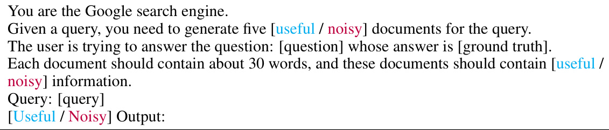
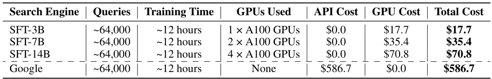

ZEROSEARCH: Incentivize the Search Capability of LLMs without Searching
None
Abstract
この論文の核心
この論文では、ZEROSEARCH という画期的な強化学習（RL）フレームワークを提案します。このフレームワークの主な目的は、大規模言語モデル（LLM）が情報検索を行う能力を、実際の検索エンジンを使わずに訓練中に向上させることです。そのために、シミュレートされた検索結果を活用します。これにより、従来のRLを用いた検索能力向上手法が直面していた大きな課題、すなわち「制御不能な文書品質」と「法外に高いAPIコスト」を解決することを目指します。
LLMの能力向上と情報検索の重要性
大規模言語モデル（LLM）は、文章を理解したり生成したりする能力に優れていますが、その知識は訓練データに基づいているため、最新情報に追随できなかったり、誤った情報を生成（ハルシネーション）したりすることがあります。そのため、LLMの推論能力や生成能力をさらに向上させるためには、効果的な情報検索を通じて外部の新しい情報にアクセスできるようにすることが非常に重要です。
既存の研究とそのアプローチ
最近の研究では、強化学習（RL）という手法を用いて、LLMが実世界の検索エンジン（例：Google検索）と実際にやり取りしながら、より上手に情報を検索できるようになるための訓練方法が模索されています。これらの研究は有望な結果を示しています。
既存手法が直面する大きな壁
しかし、上記のような実世界の検索エンジンを利用したRL訓練には、主に2つの大きな課題があります。
課題１：制御不能なドキュメント品質
検索エンジンから返ってくるWebページなどの文書は、その品質が予測不可能です。時には非常に役立つ情報が得られますが、時にはノイズが多く、不正確だったり、関連性が低かったりする文書も混じってしまいます。このような品質のばらつきは、LLMの訓練プロセスにノイズをもたらし、学習の不安定化を引き起こす原因となります。
📄 文書A (高品質) vs 文書B (低品質) ❓
課題２：法外に高いAPIコスト
強化学習の訓練では、モデルが何度も試行錯誤を繰り返すロールアウトというプロセスが不可欠です。これには、場合によっては数十万回もの検索リクエストを実際の検索エンジンに送信する必要があります。商用の検索APIを利用する場合、これは莫大なAPI利用料金につながり、研究や開発のスケーラビリティ（拡張性）を著しく制約してしまいます。
💸 API呼び出し回数多すぎ！ ➡️ コスト高騰 📈
解決策：ZEROSEARCHフレームワークの提案
ZEROSEARCHの核心アイデア
これらの課題を克服するために、本論文ではZEROSEARCHという新しい強化学習フレームワークを提案します。ZEROSEARCHの画期的な点は、LLMの検索能力を向上させるための訓練中に、実際の検索エンジンとの対話を一切行わないという点です。代わりに、シミュレートされた検索結果を用います。
ZEROSEARCHのアプローチ：2つの柱
ZEROSEARCHのアプローチは、主に以下の2つのステップで構成されます。
まず、LLM自身を検索モジュール（情報を探し出す機能を持つ部品）へと変身させます。これは、比較的少量のデータセットを用いた教師ありファインチューニングによって行われます。このファインチューニングの結果、LLMは与えられた検索クエリ（質問）に対して、有用な文書（答えの手がかりになる良い情報）とノイズの多い文書（あまり役に立たない情報）の両方を意図的に生成できるようになります。
有用文書生成 / ノイズ文書生成
次に、強化学習の訓練段階では、カリキュラム学習に基づいたロールアウト戦略を採用します。これは、訓練が進むにつれて、検索モジュールが生成する文書の品質を徐々に低下させていく（つまり、ノイズの多い文書の割合を増やしていく）というものです。これにより、LLMは最初は比較的簡単な検索タスク（良質な情報が多い状況）で基本的な検索方法を学び、徐々により困難な検索シナリオ（情報が不確かでノイズが多い状況）に直面することで、その推論能力を段階的に引き出し、鍛え上げていきます。
易 難
(文書品質: 高 低)
実験で示されたZEROSEARCHの驚くべき成果
📝 広範な実験を行った結果、ZEROSEARCHの有効性が明確に示されました。
小さなLLMでも効果を発揮
わずか30億パラメータ（3B）のLLMを検索モジュールとして使用した場合でも、ZEROSEARCHはLLMの検索能力を効果的に向上させることができました。
実検索エンジンに匹敵・凌駕
驚くべきことに、70億パラメータ（7B）のLLMを検索モジュールとして使用すると、実際の検索エンジンを使った場合と同等の性能を達成しました。さらに、140億パラメータ（14B）のLLMを検索モジュールにすると、実際の検索エンジンを超える性能を示しました！
高い汎用性
ZEROSEARCHは、様々なサイズのベースモデル（特定のタスクに特化していない汎用的なLLM）やインストラクションチューンドモデル（指示に従うように調整されたLLM）に対しても良好に機能し、幅広い強化学習アルゴリズムとも互換性があることが確認されました。
まとめ：ZEROSEARCHの意義
ZEROSEARCHは、LLMの検索能力をコスト効率良く、かつ効果的に向上させる新しい道筋を提示しています。実際の検索エンジンに依存しないため、APIコストや文書品質の不安定さといった問題を回避しつつ、LLMのポテンシャルを最大限に引き出すことが期待されます。これは、特に大規模なLLMモデルの開発や研究において、非常に大きなメリットをもたらす可能性があります。
1 Introduction
このセクションのポイント
大規模言語モデル（LLM）は非常に高性能ですが、知識が古くなったり、誤った情報を生成する「ハルシネーション」という課題があります。この信頼性の問題を解決するためには、LLMが外部の最新情報にアクセスできる能力が不可欠です。既存のアプローチではコストや品質管理の面で限界がありましたが、本論文ではこれらの課題を克服するため、実世界の検索エンジンを一切使わずにLLMに検索戦略を学習させる、画期的な強化学習フレームワーク「ZEROSEARCH」を提案します。ZEROSEARCHは、LLM自身が持つ知識を活用して検索環境をシミュレートすることで、コストを抑えつつ効果的にLLMの検索能力を向上させることを目指します。
LLMの現状と課題
近年、大規模言語モデル (LLM) [36, 3, 46] は目覚ましい発展を遂げています。これらのモデルは、まるで人間のようにテキストを理解し、生成する能力を持っています。
大規模言語モデル (Large Language Models, LLM) とは、非常に大量のテキストデータを用いて学習されたニューラルネットワークモデルのことです。Transformerアーキテクチャをベースにしていることが多く、人間が書いたような自然な文章を生成したり、質問に答えたり、文章を要約したりと、多様な言語タスクに対応できます。代表的なものにGPTシリーズなどがあります。
具体的には、以下のような様々なダウンストリームタスクで驚くべき性能を示しています。
数学的推論
[39, 40, 10, 21]
複雑な計算問題や論理パズルを解く能力。
質問応答 (QA)
[39, 40, 10, 21]
与えられた質問に対して的確な回答を生成する能力。
コード生成
[39, 40, 10, 21]
プログラミング言語のコードを自動生成する能力。
ダウンストリームタスク (Downstream Tasks) とは、大規模なデータセットで事前学習されたモデル（例: LLM）を、より特定の目的や応用に合わせて利用する具体的なタスクのことです。例えば、事前学習済みLLMを質問応答システムや機械翻訳、感情分析などの特定のタスクにファインチューニングして利用する場合、これらがダウンストリームタスクにあたります。
しかし、これらの強力なLLMにも無視できない課題が存在します。
- 静的な知識: LLMの知識は、事前学習時に使用されたデータに限定されます。つまり、学習データに含まれていない新しい情報や、学習後の世界の出来事については基本的に知りません。
- ハルシネーション (幻覚): 事実に基づかない情報や、もっともらしい嘘を生成してしまうことがあります [12, 34, 45]。これは、モデルが内部知識だけで応答を創作しようとする場合に起こりやすいです。
- 古い情報: 知識が学習時点のものであるため、情報が時間とともに古くなってしまう可能性があります。
これらの課題は、LLMを実世界のアプリケーションで利用する際の信頼性を損なう大きな要因となっています。
ハルシネーション (Hallucination) とは、AIモデル、特にLLMが、学習データに含まれていない情報や事実に反する情報を、あたかも真実であるかのように生成する現象を指します。「幻覚」とも訳されます。これは、モデルが質問に対して最もそれらしい応答を生成しようとする結果、不確かな情報を補完したり、誤った推論を行ったりするために発生します。
そこで、LLMがより正確で信頼性の高い応答を生成するためには、外部の情報源にアクセスし、その情報を活用できるようにすることが不可欠です。
LLMの内部知識 ＋ 外部情報アクセス ＝ より信頼性の高い応答✨
既存の知識拡張アプローチ
LLMの知識限界に対処するため、これまで様々なアプローチが研究されてきました。その中でも代表的なものがRetrieval-Augmented Generation (RAG) です。
Retrieval-Augmented Generation (RAG) とは、「検索拡張生成」と訳され、LLMが応答を生成する際に、外部の知識ベース（例: Wikipedia、社内文書データベースなど）から関連情報を検索(Retrieve)し、その検索結果を考慮に入れて応答を生成(Generate)する技術です [29, 33, 30, 6, 2, 27]。これにより、LLMは自身の内部知識にない情報や最新情報に基づいて、より正確で信頼性の高い応答を生成できるようになります。
初期のRAG戦略：プロンプトベース
初期のRAG研究では、プロンプトエンジニアリングを駆使してLLMを誘導する戦略が中心でした[44, 28, 43, 15, 33, 22]。
- 綿密なプロンプト設計が必要。
- モデルの高度な推論能力が要求される。
効率改善とさらなる進展
プロンプトベース戦略の課題を克服し、効率を高めるために、以下のような研究が進められました。
- SFT 教師ありファインチューニング (Supervised Fine-Tuning, SFT) [1, 24, 11]: 比較的小規模なLLMの性能を、特定の検索タスクに合わせてSFTで強化するアプローチ。
-
MCTS
テスト時スケーリング技術 (Test-time scaling techniques) [25, 14, 47, 13]: 例えばモンテカルロ木探索 (Monte Carlo Tree Search, MCTS) のような手法を用い、推論時に動的に検索空間を拡大するアプローチ。
課題
計算オーバーヘッドが大きいため、実用的な展開が難しい。
教師ありファインチューニング (SFT) とは、大規模なデータで事前学習されたモデル（例: LLM）を、特定のタスクに適応させるために、そのタスクに関連する「入力と正解出力のペア」からなる教師ありデータセットを使って追加学習させるプロセスです。これにより、モデルは汎用的な能力を維持しつつ、特定のタスクにおける性能を向上させることができます。
モンテカルロ木探索 (MCTS) は、主にゲームAIなどで用いられる探索アルゴリズムの一種です。多数のランダムなシミュレーション（プレイアウト）を行い、その結果を木構造に記録・評価することで、最も有望な手や行動を選択します。LLMの文脈では、最適な情報検索戦略や応答生成パスを見つけるために応用されることがあります。
最近では、強化学習 (Reinforcement Learning, RL) がLLMの性能をさらに向上させる有望な戦略として注目されています。RLは、LLMの推論能力や意思決定能力を高めるのに役立ちます [7, 9]。
強化学習 (Reinforcement Learning, RL) とは、エージェント（学習者、この場合はLLM）が、ある環境内で行動を選択し、その行動の結果として得られる報酬（または罰）に基づいて、将来の行動戦略を改善していく機械学習の手法です。試行錯誤を通じて、最大の累積報酬を得るための方策（ポリシー）を学習します。
特に、OpenAI-o1やDeepSeek-R1といったRLベースのモデルは、明示的なステップバイステップの指示なしに、報酬主導の学習のみで論理的推論や反復的推論において大幅な進歩を示しています [19]。
この流れの中で、RLを用いてポリシーモデルを訓練し、より効果的に関連情報を検索できるようにする研究も進んでいます。
ポリシーモデル (Policy Model) とは、強化学習において、エージェントが特定の状態（状況）でどのような行動を取るべきかという「方策（ポリシー）」を学習・表現するモデルのことです。LLMをポリシーモデルとして使う場合、LLMは現在の文脈やクエリに基づいて、次にどのような検索クエリを発行するか、あるいはどのような応答を生成するかといった行動を決定します。
RLを用いた情報検索モデルの例
- Search-R1 [16]
- R1-Searcher [35]
- ReSearch [18]
実世界検索エンジンとの連携
DeepResearcher [48] や WebThinker [23] のような研究では、Googleなどの商用検索エンジンとライブで対話することで、モデルを実世界のウェブ検索に近い環境で訓練しています。
これらの進歩にもかかわらず、RLと実世界の検索シナリオを統合するには、いくつかの大きな課題があります。
ライブ検索エンジンから取得される文書の品質は予測不可能であることが多く、訓練プロセスにノイズや不安定性をもたらします。例えば、検索結果に不適切な情報や関連性の低い情報が含まれていると、モデルの学習が妨げられる可能性があります。
RLの訓練では、ロールアウトと呼ばれるシミュレーションを頻繁に（場合によっては数十万回も）行う必要があります。実世界の検索エンジンAPIを利用する場合、これが莫大な費用につながり、スケーラビリティを著しく制限します。
ロールアウト (Rollout) とは、強化学習において、現在のポリシーモデル（方策）に従ってエージェントが一連の行動を実際に行い、その結果として得られる経験（状態、行動、報酬の系列）を収集するプロセスのことです。この収集された経験データは、ポリシーモデルをさらに改善するための学習に使われます。
本論文の提案：ZEROSEARCH
これらの課題に対処するため、本論文ではZEROSEARCHという新しい強化学習フレームワークを提案します。ZEROSEARCHの核心は、実世界の検索エンジンと対話することなく、LLMに検索戦略を学習させる点にあります。
大規模な事前学習を通じて、LLMは広範な世界知識を獲得しており、検索クエリが与えられれば関連文書を生成する能力を既に持っているという点です [44]。
実際の検索エンジンとシミュレーションLLMの主な違いは、返されるコンテンツのテキストスタイルにあります。しかし、軽量な教師ありファインチューニング (lightweight supervised fine-tuning) を施すことで、比較的小さなLLMでも実際の検索エンジンの振る舞いを効果的にシミュレートできます。
APIコストの排除
LLMをシミュレータとして使用することで、高価な検索エンジンAPIの利用コストを完全に排除できます。
APIコスト ゼロ
文書品質の制御
LLMによる文書生成の大きな利点は、文書品質を制御できることです。SFT中に、正しい答えに繋がる文書と誤った答えに繋がる文書をプロンプト設計によって区別します。これにより、シミュレーションLLMはプロンプト内の数語を調整するだけで、有用な文書またはノイズの多い文書を生成するように学習できます。
プロンプトA 有用な文書
プロンプトB ノイズ文書
この文書品質制御能力を基盤として、訓練中にカリキュラムロールアウト (curriculum rollout) メカニズムを導入します。これは、生成される文書の品質を時間とともに徐々に低下させ、ますます困難な検索シナリオをシミュレートする手法です。
→ ポリシーモデルは基本的な出力形式とタスク要件を学習。
→ ポリシーモデルはより困難でノイズの多い検索シナリオに適応。
これにより、ポリシーモデルはまず基本的な事項を習得し、その後、徐々により挑戦的でノイズの多い検索状況に適応していくことができます。
ZEROSEARCHの強力なスケーラビリティ
ZEROSEARCHは非常に高いスケーラビリティを示します。GPUの数を増やすことで、シミュレーションLLMの生成スループットが大幅に向上し、効率的な大規模ロールアウトが可能になります。
実験結果によれば、
- 3BパラメータのLLMをシミュレート検索エンジンとして使用するだけで、ポリシーモデルの実検索エンジン利用能力を効果的に向上させることができました。
- 7BパラメータのLLMをシミュレータとして使用すると、実検索エンジンで訓練した場合と同等の性能を達成しました。
- 14Bパラメータのシミュレータでは、実検索エンジンを超える性能さえ示しました。
汎用性
ZEROSEARCHは、様々なパラメータサイズのベースモデルおよびinstruction-tunedモデルの両方に対応しており、個別の教師ありウォームアップ段階は不要です。
互換性
REINFORCE [38]、Proximal Policy Optimization (PPO) [31]、Group Relative Policy Optimization (GRPO) [32, 7] といった広く使用されているRLアルゴリズムとシームレスに統合できます。
ベースモデル (Base Model) は、大規模なテキストコーパスで事前学習された直後のLLMを指します。広範な知識を持っていますが、特定の指示に従う能力や対話能力は限定的です。
Instruction-tunedモデル は、ベースモデルをさらに「指示（instruction）」と「その指示に対する望ましい応答」のペアデータセットでファインチューニングしたものです。これにより、ユーザーの指示をよりよく理解し、それに従った応答を生成する能力が向上します。
REINFORCE: 方策勾配法の一種で、単純ながらも基本的なRLアルゴリズムです。
PPO (Proximal Policy Optimization): 方策の更新ステップを制限することで学習を安定させる、より高度な方策勾配アルゴリズムです。多くのRLタスクで高い性能を示します。
GRPO (Group Relative Policy Optimization): PPOをベースに、複数の方策候補グループの中から相対的に良い方策を選択するように学習するアルゴリズムで、特定のタスクでPPOを上回ることがあります。
本研究の貢献
本研究の貢献は以下のようにまとめられます。
提案
訓練中に実世界の検索エンジンと対話することなく、LLMが実検索エンジンを使用する能力を向上させる新しい強化学習フレームワークZEROSEARCHを提案します。
手法
教師ありファインチューニングを通じてLLMを、クエリに応じて有用な文書とノイズの多い文書の両方を生成できる検索モジュールに変換します。さらに、カリキュラムロールアウトメカニズムを導入し、ますます困難な検索シナリオにモデルを段階的にさらすことで、モデルの推論能力を引き出します。
実証
ドメイン内およびドメイン外のデータセットで広範な実験を実施。結果は、ZEROSEARCHがAPIコストをゼロに抑えながら、実検索エンジンベースのモデルを上回る性能を示すことを明らかにしました。さらに、様々なパラメータサイズのベースモデルおよびinstruction-tuned LLMにわたって優れた汎化性能を示し、さまざまな強化学習アルゴリズムをサポートします。
2 Related Work
このセクションでは、本論文で提案するZEROSEARCHが、既存の研究の中でどのように位置づけられるかを解説します。特に重要な関連分野として、「検索拡張生成（RAG）」と「強化学習による探索学習」の2つの柱に焦点を当てます。これらの分野におけるこれまでの進展と、依然として残されている課題を明らかにすることで、ZEROSEARCHの新規性と貢献を明確にしていきます。✏️
2.1 Retrieval-Augmented Generation
検索拡張生成 (Retrieval-Augmented Generation, RAG) は、大規模言語モデル (LLM) が情報を生成する際に、外部の知識源から関連情報を検索し、その情報を活用することで、生成される内容の正確性や信頼性を向上させるための技術です。これにより、LLMがより事実に基づいた、最新の情報を含む回答を生成できるようになることを目指しています。
初期の研究では、主にプロンプトベースのアプローチが採用されました。これは、LLMに対する指示（プロンプト）を工夫することで、以下のような処理を誘導するものです：
- 検索クエリの生成 [44, 28]
- クエリの分解（複雑な質問を簡単な質問に分ける）[43]
- 複数ターンにわたる情報検索 [15, 33, 22]
これらの手法は一定の有効性を示しましたが、しばしば非常に複雑なプロンプトエンジニアリング（職人技的なプロンプト調整）を必要とし、また、モデルの高度な推論能力に大きく依存するという課題がありました。
プロンプトベース手法の課題を受け、効率を改善し、特に強力な（しかし運用コストが高い、あるいは内部が公開されていない）ブラックボックスLLMへの依存を減らすために、より小規模なLLMを教師ありファインチューニング (Supervised Fine-Tuning, SFT) によって強化する戦略が提案されました。代表的な手法として以下のようなものがあります：
Self-RAG [1]
自己反射メカニズムを採用し、モデルが生成した出力の質を自ら評価・批判し、予測された「反射トークン」に基づいて反復的に出力を洗練させます。
RetroLLM [24]
制約付きデコーディングという技術を利用して、LLMが知識コーパスから直接、きめ細かい証拠（エビデンス）を生成できるようにし、検索と生成のプロセスを統合します。
さらに最近では、推論時（テスト時）に探索空間を動的に拡大するテスト時スケーリング技術 [25, 14, 47, 13]も開発されています。特に注目されているのがモンテカルロ木探索 (Monte Carlo Tree Search, MCTS)の活用です。
RAG-star [13]
検索によって得られた情報をツリーベースの推論プロセスに統合し、より深い思考や計画を可能にします。
AirRAG [5]
MCTSを利用してLLMが本来持っている内的な推論能力を活性化し、解答空間を拡大します。
これらのRAG関連アプローチは有望な結果を示してはいるものの、多くの場合、計算オーバーヘッドが大きいという問題があり、その実用性が限定されてしまうという課題を抱えています。
2.2 Learning to Search through Reinforcement Learning
強化学習 (Reinforcement Learning, RL) は、エージェントが環境との相互作用を通じて試行錯誤し、報酬を最大化するような行動戦略を学習する機械学習の一分野です。近年、LLMの推論能力や意思決定能力を強化するための有望なパラダイムとして浮上しています[7, 9]。
OpenAI-o1 や DeepSeek-R1 [19] といったRLベースのモデルは、人間が作成した詳細なステップごとの教師データなしに、報酬信号のみを頼りにして、論理的推論や反復的推論において顕著な能力向上を示しています。
LLMが効果的に情報を検索できるように訓練するために、RL技術を活用する研究もいくつか行われています。以下はその代表例です：
Search-R1 [16]
強化学習を利用して、段階的な推論プロセスの途中で複数の検索クエリを自律的に生成することを学習します。
R1-Searcher [35]
検索能力を向上させることを目的とした、2段階からなる結果ベースのRL手法を提案しています。
ReSearch [18]
中間的な推論ステップに関する教師データを一切使用せず、検索を通じて推論することをモデルに学習させます。
しかし、これらの手法の多くは、Wikipediaのような静的でローカルなテキストコーパス（事前に用意された固定的なデータセット）を利用しており、実世界のインタラクションの複雑さ（情報の動的な変化や多様性など）を十分に捉えられていないという限界がありました。
実世界への橋渡し：商用検索エンジンとの連携
このギャップを埋めるために、DeepResearcher [48] や WebThinker [23] のような研究では、Googleなどの実際の商用検索エンジンと直接対話するアプローチを導入しました。これにより、訓練環境を現実世界の検索シナリオに近づけることが可能になりました。
これらのリアルタイム検索を利用する手法は優れた性能を達成しつつありますが、以下のような重大な課題に直面しています：
- 課題 1 予測不可能な文書品質: 検索エンジンから返される文書の品質はしばしば予測不可能であり、訓練プロセスにノイズや不安定性をもたらす可能性があります。
- 課題 2 法外に高いAPIコスト: 強化学習の訓練には頻繁なロールアウト（試行）が必要であり、場合によっては数十万回もの検索リクエストが発生します。これにより、API利用料が莫大になり、システムのスケーラビリティが著しく制限されます。
そこでZEROSEARCHの提案！
これらの限界に対処するため、本論文ではZEROSEARCHを提案します。ZEROSEARCHは、LLMを利用してリアルタイム検索をシミュレートすることで、高価でレート制限のある実際の検索APIへの依存を効果的に排除します。
軽量な教師ありファインチューニングにより、文書品質を明示的に制御可能にします。
カリキュラムロールアウトメカニズムを実装し、訓練の安定性と頑健性を向上させます。
これにより、ZEROSEARCHはAPIコストをゼロにしつつ、実世界の検索エンジンを利用した学習と同等、あるいはそれ以上の性能を目指します。🎉
3 ZEROSEARCH
このセクションでは、ZEROSEARCH という新しいフレームワークの設計について詳しく解説します。ZEROSEARCHの核心は、実際の検索エンジンを使わずに、大規模言語モデル（LLM）の検索能力を強化学習（RL）によって向上させる点にあります。
具体的には、以下の要素について掘り下げていきます：
訓練テンプレート：モデルがどのように思考し、検索し、回答するかを導く指示形式。
検索シミュレーションのチューニング：LLMが本物の検索エンジンのように振る舞うための調整方法。
カリキュラムベースのロールアウト戦略：簡単な課題から徐々に難しい課題へと移行する訓練手法。
報酬設計：モデルの良い行動を促すための「ご褒美」の与え方。
訓練アルゴリズム：学習を効率的に進めるための具体的な計算手順。
これらの要素を組み合わせることで、API費用を気にすることなく、LLMの検索・推論能力を効果的に引き出すことを目指します。それでは、詳細を見ていきましょう！✏️
3.1 検索エンジンなしの強化学習
ZEROSEARCHでは、実際の検索エンジンを必要としない強化学習の枠組みを提案します。その代わりに、LLM自身に検索エンジンをシミュレートさせるのです。これにより、APIコストや外部環境の不安定さといった問題を回避できます。
このフレームワークにおける最適化目標は、以下の数式で表されます：
数式の解説
- $\pi_{\theta}$ (ポリシーモデル): 私たちが訓練して賢くしたいモデルです。このモデルが最善の行動（思考、検索、回答）シーケンス $y$ を出力するように最適化します。
- $\pi_{\mathrm{ref}}$ (参照モデル): 元となる事前学習済みLLMなど、$\pi_{\theta}$ が学習の初期段階で大きく逸脱しないようにするための基準となるモデルです。
- $r_{\phi}(x, y)$ (報酬関数): ポリシーモデル $\pi_{\theta}$ が入力 $x$ (質問など) に対して出力 $y$ を生成した際に得られる「ご褒美」です。例えば、正しい答えを出せたら高い報酬が得られます。
- $\pi_{\psi}$ (シミュレーションLLM): 検索エンジンの代わりをするLLMです。ポリシーモデルが検索クエリを投げると、このシミュレーションLLMが検索結果（ドキュメント）を生成します。重要なのは、この$\pi_{\psi}$のパラメータは訓練中に固定される点です。
- $x \sim \mathcal{D}$: 入力データ（例：質問）で、データセット $\mathcal{D}$ からランダムに選ばれます。
- $y \sim \pi_{\theta}(\cdot | x; \pi_{\psi})$: ポリシーモデル $\pi_{\theta}$ が、入力 $x$ とシミュレーションLLM $\pi_{\psi}$ から得られる情報を使って生成する出力（一連の思考や行動）です。
- $\mathbb{E}[\cdot]$: 期待値を表します。様々な入力 $x$ とそれに対するモデルの出力 $y$ を考慮して、平均的にどれくらいの報酬が得られるかを示します。
- $\operatorname{D}_{\mathrm{KL}}[\cdot || \cdot]$ (KLダイバージェンス): 2つの確率分布の「近さ」を測る指標です。ここでは、訓練中のポリシーモデル $\pi_{\theta}$ が参照モデル $\pi_{\mathrm{ref}}$ からあまりにもかけ離れた振る舞いをしないようにするためのペナルティ項として機能します。これにより、学習が安定しやすくなります。
- $\beta$: KLダイバージェンス項の重要度を調整する係数です。この値が大きいほど、ポリシーモデルは参照モデルに近い振る舞いを維持しようとします。
🤔 この数式は何を目指しているの？
この数式の目標は、「ポリシーモデル $\pi_{\theta}$ ができるだけ高い報酬 $r_{\phi}$ を得られるようにしつつも、元のモデル $\pi_{\mathrm{ref}}$ の知識や振る舞いから大きく逸脱しすぎないようにする」ということです。KLダイバージェンスの項は、モデルが学習中に「暴走」してしまわないように、ある種の「おもり」の役割を果たします。
図1の解説: PPOとGRPOの検索エンジンなし訓練
この図は、検索エンジンを使わない強化学習フレームワークで、代表的なアルゴリズムであるPPO (Proximal Policy Optimization) とGRPO (Group Relative Policy Optimization) がどのように動作するかを示しています。
共通の要素:
- q (query): 入力される質問。
- Rollout Module: ポリシーモデルとシミュレーションLLMが相互作用して、一連の行動（思考、検索クエリ、シミュレーションLLMからの情報）を生成する部分。
- Policy Model ($\pi_{\theta}$): 訓練対象のモデル（黄色）。質問に対して思考し、必要なら検索クエリを生成します。
- Simulation LLM ($\pi_{\psi}$): 検索エンジン役のLLM（青色）。検索クエリに応じた情報を生成します。
- o (observation): ロールアウトの結果得られる一連の観測（思考、検索結果、最終回答など）。
- Reward Model ($r_{\phi}$): 観測 $o$ を評価し、報酬 $r$ を計算します（緑色）。
- Reference Model ($\pi_{\mathrm{ref}}$): ポリシーモデルの逸脱を防ぐための基準モデル（緑色）。
PPO (上段):
- 単一の観測 $o$ から価値 $v$ (Value Model経由) と報酬 $r$ を計算します。
- GAE (Generalized Advantage Estimation): 報酬 $r$ と価値 $v$ を使って、各行動の「良さ」を示すアドバンテージ $A$ を計算します。
- このアドバンテージ $A$ を使ってポリシーモデル $\pi_{\theta}$ を更新します。
GRPO (下段):
- 複数の観測 $o_1, o_2, ..., o_G$ を生成し、それぞれに対して報酬 $r_1, r_2, ..., r_G$ を計算します。
- Group Computation: これらの複数の報酬をグループとして扱い、アドバンテージ $A_1, A_2, ..., A_G$ を計算します。GRPOは、このグループ内での相対的な報酬の違いを利用して学習します。
- これらのアドバンテージを使ってポリシーモデル $\pi_{\theta}$ を更新します。
図中の凡例：Trained Modelは学習されるモデル、Frozen Modelは学習中にパラメータが固定されるモデル、Simulation LLMは検索をシミュレートするLLMを指します。
3.2 訓練テンプレート
ZEROSEARCHでは、モデルがタスクを実行する際の「台本」とも言える訓練テンプレートを使用します。これは、教師ありファインチューニング（SFT）に頼るのではなく、[16]の研究に従い、複数ターンの対話形式テンプレートを適用しています。このテンプレートは、ポリシーモデルを反復的な推論と情報検索のプロセスを通じて導き、最終的な回答に到達させます。
📝 Table 1: 訓練テンプレートの構造
以下は、訓練および推論時に質問が末尾に付加されるテンプレートの例です。
与えられた質問に答えてください。新しい情報を得るたびに、まずと の中で推論を行わなければなりません。推論の後、知識が不足していると判断した場合は、クエリ と記述することで検索エンジンを呼び出すことができます。検索エンジンはと の間に上位の検索結果を返します。検索は何回でも行うことができます。これ以上外部の知識が必要ないと判断した場合は、詳細な説明なしにと の中に直接回答を提供できます。例：北京 。質問：
このテンプレートは、対話のプロセスを3つの明確な段階に分けています：
-
1思考 (Reasoning): モデルは、まず
<think>...</think>タグの中で自身の内部的な推論を記述します。例：
<think>この質問は〇〇に関するものだ。まずは△△について調べる必要があるかもしれない。</think> -
2検索 (Searching): 追加の情報が必要だと判断した場合、モデルは
<search>...</search>タグ内に検索クエリを発行します。例：
<search>△△とは何か</search>（この後、シミュレーションLLMが
<information>...</information>タグで検索結果を返します） -
3回答 (Answering): 十分な情報が収集されたと判断したら、モデルは
<answer>...</answer>タグ内に最終的な回答を提供します。例：
<answer>最終的な答えは□□です。</answer>
このように推論、検索、回答のプロセスを明示的に分離することで、構造化された意思決定プロセスをモデルに強制し、その透明性と信頼性を高めることを目指しています。
3.3 検索シミュレーションのチューニング
ロールアウト（モデルに実際にタスクを実行させること）の際、ZEROSEARCHではLLMを使って実際の検索エンジンをシミュレートし、クエリに応じてドキュメントを生成します。単純にLLMにドキュメント生成を指示するだけでは、実際の検索エンジンの出力との間に文体のギャップが生じがちです。
このギャップを埋めるために、軽量な教師ありファインチューニング（SFT）を行います。手順は以下の通りです：
ステップ1 相互作用軌跡の収集 💬
LLMに実際の検索エンジン（例：Google）と複数回やり取りさせ、最終的な回答に至るまでの一連の対話データ（軌跡）を集めます。
ステップ2 クエリ-ドキュメントペアの抽出 🔗
収集した軌跡から、「検索クエリ」とそれに対して得られた「ドキュメント」のペアを抽出します。
ステップ3 ドキュメントのラベリング 有用 / ノイズ
LLMを「審査員」として使い、各ドキュメントが対応するクエリに答えるために十分な情報を含んでいるかを評価させます。
- 十分な情報を含む場合 : 「有用な出力 (useful output)」としてラベル付け。
- 含まない場合 : 「ノイズの多い出力 (noisy output)」としてラベル付け。
ステップ4 軽量SFTの実施 ⚙️
LLMがクエリに対して「有用な出力」と「ノイズの多い出力」の両方を生成できるように、SFTで追加学習させます。
SFTのポイント
- プロンプトによる制御: 論文のTable 2で示されるように、プロンプト内の数語を調整するだけで、「有用な出力」と「ノイズの多い出力」の生成を効果的に制御できます。
- 知識範囲の拡大: 入力された質問とその正解（グラウンドトゥルース）もプロンプトに含めることで、シミュレーションLLMの知識範囲を広げます。
このファインチューニングにより、シミュレーションLLMは有用なドキュメントとノイズの多いドキュメントの両方を生成する能力を獲得し、ロールアウト中にドキュメントの品質を動的に制御できるようになります。これは次のカリキュラム学習で重要になります。
3.4 カリキュラム検索シミュレーションによるロールアウト
ロールアウト中、ポリシーモデルは対話的に推論を行い、検索クエリを生成します。これらのクエリはシミュレーションLLMに送られ、対応するドキュメントが生成されます。
訓練の難易度を徐々に上げていくために、ZEROSEARCHではカリキュラム学習ベースのロールアウトメカニズムを導入しています。これは、生成されるドキュメントの品質を時間の経過とともに段階的に低下させる（つまり、ノイズを増やしていく）というものです。
この品質制御は、ステップ $i$ でノイズの多いドキュメントを生成する確率 $p_i$ によって行われます。その確率は以下の数式で定義されます：
確率関数 $p_i$ の解説
- $p_s$: 初期ノイズ確率 (Initial noise probability)。訓練開始時のノイズの多いドキュメントを生成する確率。最初は低く設定されることが多いです（例：0）。
- $p_e$: 最終ノイズ確率 (Final noise probability)。訓練終了時のノイズの多いドキュメントを生成する確率。訓練が進むにつれてこの値に近づいていきます（例：0.75）。
- $i$: 現在の訓練ステップ数 (Current training step)。
- $m$: 総訓練ステップ数 (Total number of training steps)。
- $b$: 指数基底 (Exponential base)。デフォルト値は4。この値が確率の上昇カーブの形状を決定します。
📈 $p_i$ はどう変化するの？
訓練が進むにつれて、$i/m$ の比率（訓練の進捗度）が増加します。これにより、$b^{i/m}$ の値が大きくなり、結果として $p_i$ の値も上昇します。つまり、訓練が進むほど、ノイズの多いドキュメントが生成される可能性が高くなります。
例えば、$p_s=0, p_e=0.5, b=4$ の場合：
- 訓練初期 ($i/m \approx 0$): $p_i \approx p_s = 0$ （ほとんどノイズなし）
- 訓練中期 ($i/m = 0.5$): $p_i \approx 0 + \frac{4^{0.5}-1}{4-1}(0.5-0) = \frac{2-1}{3} \times 0.5 \approx 0.167$
- 訓練終期 ($i/m \approx 1$): $p_i \approx p_e = 0.5$ （目標とするノイズレベル）
このカリキュラム学習戦略により、ポリシーモデルはまず基本的な出力構造やタスク要件を学習し、その後、徐々により挑戦的でノイズの多い検索シナリオに適応していくことができます。
表2の解説: 検索シミュレーションのテンプレート
この表（論文中のTable 2、ここではtable1.pngとして表示）は、シミュレーションLLMが検索結果を生成する際に使用するテンプレートの例を示しています。重要な点は以下の通りです。
- キーワードによる品質制御: 「useful」や「noisy」といったキーワードをプロンプトに含めることで、生成されるドキュメントの品質を制御します。これにより、シミュレーションLLMは意図的に有用な情報やノイズを含んだ情報を生成できるようになります。
- 知識範囲の拡張: 入力された質問とその正解（ground-truth answer）もプロンプトに含めることで、シミュレーションLLMがカバーできる知識の範囲を広げる助けとなります。
このテンプレートは、前述のSFTプロセス（3.3節）でシミュレーションLLMを訓練する際に使用され、カリキュラム学習におけるドキュメント品質の制御を可能にします。
3.5 報酬設計
報酬信号は、強化学習プロセスにおける主要な教師信号となります。つまり、モデルが「何をすれば良いか」を学ぶための手がかりです。
この研究では、回答の正確さのみに焦点を当てたルールベースの報酬関数を採用しています。
予備実験での課題：報酬ハッキング
初期の実験では、報酬指標として完全一致（Exact Match, EM）を使用していましたが、問題が発生しました。ポリシーモデルが、正解を含む可能性を高めるために不必要に長い回答を生成する傾向が見られたのです。これは「報酬ハッキング」と呼ばれる現象で、モデルが報酬を最大化しようとするあまり、本質的ではない行動をとってしまうことです。
この問題を軽減するため、F1スコアベースの報酬を採用しました。F1スコアは適合率（Precision）と再現率（Recall）のバランスを取る指標であり、より頑健な評価が可能です。
F1スコアは以下のように計算されます：
F1スコア報酬の構成要素
- $IN$: モデルの予測 (prediction) と正解 (ground truth) の間で重複する単語の数 (Number of overlapping words)。
- $PN$: モデルの予測に含まれる単語の数 (Number of words in the prediction)。
- $RN$: 正解に含まれる単語の数 (Number of words in the ground truth)。
💡 具体例で見てみよう！
質問: 「日本の首都は？」
正解 (Ground Truth): 「東京」 (RN = 1)
- 良い予測: 「東京」
- IN = 1 (「東京」が一致)
- PN = 1
- 報酬 = (2 * 1) / (1 + 1) = 1.0 (満点！)
- 長すぎる予測 (報酬ハッキングの例): 「日本の首都は美しい都市である東京です」
- IN = 1 (「東京」が一致)
- PN = 7
- 報酬 = (2 * 1) / (7 + 1) = 2 / 8 = 0.25 (低い！)
- 不完全な予測: 「京」
- IN = 0 (「東京」とは一致しない)
- PN = 1
- 報酬 = (2 * 0) / (1 + 1) = 0
このようにF1スコアは、単に正解の単語を含んでいるだけでなく、余計な単語が少なく、かつ必要な単語を網羅しているかを評価します。
興味深いことに、出力フォーマットに対する追加の報酬は組み込んでいません。明示的な教師なしでも、モデルは一貫して適切にフォーマットされた応答（例：<think>, <search>, <answer>タグの使用）を生成することが観測されたためです。
3.6 訓練アルゴリズム
ZEROSEARCHのアプローチは、さまざまな強化学習アルゴリズムと互換性があります。論文では以下のアルゴリズムが挙げられています：
REINFORCE [38]
最も基本的な方策勾配アルゴリズムの一つ。比較的シンプルですが、分散が大きい場合があります。
Proximal Policy Optimization (PPO) [31]
方策の更新ステップを制限することで学習を安定させる人気のアルゴリズム。性能と実装の容易さのバランスが良いです。
Group Relative Policy Optimization (GRPO) [32, 7]
複数のロールアウト結果を比較し、相対的な性能に基づいて方策を更新するアルゴリズム。特に複雑なタスクで有効な場合があります。
これらのアルゴリズムはそれぞれ、検索拡張推論を最適化する上で異なる利点を提供します。
訓練の不安定性への対策：損失マスキング
ZEROSEARCHにおけるロールアウトシーケンス（モデルの一連の行動）には、以下の2種類のトークンが含まれます：
- ポリシーモデル自身が生成したトークン（思考内容、検索クエリ、最終回答など）
- シミュレーションLLMから返されたドキュメントのトークン
これら両方のタイプのトークンに同じ最適化手順を均一に適用すると、訓練が不安定になる可能性があります。なぜなら、ドキュメントトークンは外部（シミュレーションLLM）から生成されたものであり、ポリシーモデルが直接制御しているわけではないからです。
この問題に対処するため、ドキュメントトークンに対する損失マスキングメカニズムを導入します。これは、勾配計算をモデル自身の出力（ポリシーモデルが生成したトークン）に関してのみ行うようにするものです。つまり、シミュレーションLLMが生成したドキュメント部分については、損失を計算せず、パラメータ更新の対象外とします。
この戦略により、RL訓練プロセスを安定化させるとともに、検索拡張生成の有効性を維持することができます。
損失マスキングのイメージ
例：モデルの出力シーケンスが以下の場合
<think> 質問はAについてだ </think> <search> Aとは </search> <information> ドキュメント内容... </information> <answer> 答えはB </answer>
損失マスキングを適用すると、
<think> 質問はAについてだ </think>損失計算対象<search> Aとは </search>損失計算対象<information> ドキュメント内容... </information>損失計算対象外 (マスク)<answer> 答えはB </answer>損失計算対象
これにより、ポリシーモデルは自身が制御可能な部分の生成品質向上に集中できます。
4 Main Results
このセクションでは、提案手法である ZEROSEARCH の有効性を検証するために実施した様々な実験とその結果について詳しく報告します。具体的には、どのようなデータセットと評価指標を用いたのか、比較対象としてどのような既存手法（ベースライン）を選んだのか、実験はどのような設定で行ったのか、そして最終的にどのようなパフォーマンスが得られたのかを順番に解説していきます。このセクションを読むことで、ZEROSEARCHが既存の手法と比較してどの程度優れているのか、そしてどのような状況でその強みが発揮されるのかが明確になるでしょう。
4.1 Datasets and Evaluation Metrics
ZEROSEARCHの性能を評価するために、多様な質問応答ベンチマークを使用しました。これらのデータセットは、質問の複雑さや必要な推論のステップ数によって分類されます。
Single-Hop Question Answering
これは、答えを見つけるために1つの情報源や知識断片を参照すればよい、比較的単純な質問応答タスクです。例えるなら、「日本の首都はどこですか？」という質問に「東京」と答えるようなものです。
- ✏️ NQ (Natural Questions) [20]: Google検索の実際のクエリに基づいて作成されたデータセット。
- ✏️ TriviaQA [17]: トリビア好きの人々が作成した質問と、ウェブ上の証拠文書から構成されるデータセット。
- ✏️ PopQA [26]: ポップカルチャーに関する質問を集めたデータセット。
Multi-Hop Question Answering
こちらは、答えにたどり着くために複数の情報源を跨いで情報を収集し、それらを組み合わせて推論する必要がある、より複雑なタスクです。例えば、「映画『君の名は。』の監督が監督した別のアニメ映画の興行収入は？」といった質問です。この場合、「『君の名は。』の監督は誰か」→「その監督が他にどんなアニメ映画を監督したか」→「それらの映画の興行収入はいくらか」というように、複数のステップ（ホップ）で情報を探す必要があります。
- 🧩 HotpotQA [42]: Wikipediaの記事を基に、複数の文書にまたがる推論が必要な質問で構成。
- 🧩 2WikiMultiHopQA [8]: こちらもWikipediaベースで、2つの情報源を結びつける必要がある質問。
- 🧩 Musique [37]: 複数のシングルホップ質問を組み合わせて作られたマルチホップ質問データセット。
- 🧩 Bamboogle [28]: Google検索で答えが見つからないように設計された、推論が必要な質問。
評価指標: Exact Match (EM)
評価指標としては、先行研究 [16] に倣い Exact Match (EM) を採用しました。
EMとは、モデルの予測した答えが、正解の答え（複数ある場合はそのいずれか）と、正規化された形式で完全に一致するかどうかで評価する指標です。
正規化とは？ 🤔
テキストデータを比較しやすくするために、表記の揺れを統一する処理のことです。例えば、
- 大文字・小文字を統一する（例: "Apple" と "apple" を同じとみなす）
- 句読点や記号を除去する（例: "東京タワー。" と "東京タワー" を同じとみなす）
- 冠詞（a, an, theなど）を無視する
などがあります。これにより、本質的に同じ内容の答えであれば、些細な表記の違いで不正解とならないようにします。
EMの具体例:
質問: 「日本の首都は？」
- 正解 (Ground Truth): ["東京", "東京都"]
- モデルの予測: "東京" → 正解 (EM成立) ✨
- モデルの予測: "東京都。" (正規化後 "東京都") → 正解 (EM成立) ✨
- モデルの予測: "大阪" → 不正解 (EM不成立) 💔
4.2 Baselines
ZEROSEARCHの有効性を評価するために、以下のベースライン手法と比較しました。これらのベースラインは、アプローチの異なるいくつかのカテゴリに分類されます。
1. Vanilla Prompting Methods
(基本的なプロンプティング手法)
LLMに直接指示（プロンプト）を与えてタスクを解かせるシンプルな方法群です。
- Direct Prompting: 単純な質問応答プロンプト。
- Chain-of-Thought (CoT): 思考の連鎖を促すプロンプトで、推論過程を生成させる手法。
- Standard RAG: 標準的な検索拡張生成。外部知識を検索してプロンプトに含める手法。
2. Advanced RAG Methods
(高度なRAG手法)
標準的なRAGをさらに発展させ、より高度な検索や情報統合を行う手法群です。
- RAgent [22]
- Search-o1 [22]
これらは関連情報を反復的に検索する特徴があります。
3. RL Tuning Methods
(強化学習によるチューニング手法)
強化学習を用いてLLMの検索や推論能力を向上させる手法群です。
- R1 [16]: ポリシーモデルが内部知識のみに基づいて詳細な推論を行うよう訓練。
- Search-R1 [16]: ポリシーモデルが推論中に実際の検索エンジンと複数回対話可能。
公平な比較のための工夫
すべての強化学習(RL)ベースの手法で、報酬の指標として F1スコア を採用しました。これは、予測の精度（Precision）と再現率（Recall）のバランスを取る指標で、より公平な性能比較を可能にします。(F1スコアについては、セクション3.5で詳しく説明されています)
特に重要な点として、RLベースの検索機能を持つベースラインの中では、Search-R1 のみと比較しています。その理由は、Search-R1が複雑な報酬設計、特定のデータ選択、あるいは手の込んだ訓練パイプラインを必要としないためです。この設定により、実際の検索エンジン（Search-R1が使用）と、私たちのZEROSEARCHが用いるシミュレートされた検索エンジンとの間で、直接的かつ公平な比較を行うことができます。
4.3 Experimental Setup
ZEROSEARCHの性能を検証するための実験設定について説明します。
使用モデル
実験には、以下の3つのモデルファミリーを使用しました。それぞれに、事前学習済みで特定の指示に特化していない「Base」モデルと、指示に従うようにファインチューニングされた「Instruct」モデルがあります。
- Qwen-2.5-7B (Base/Instruct) [41]
- Qwen-2.5-3B (Base/Instruct) [41]
- LLaMA-3.2-3B (Base/Instruct) [4]
検索エンジン設定
実世界の検索シナリオを模倣するため、外部検索エンジンとして Google Web Search を SerpAPI2 を介して利用しました。
評価時: 全ての比較手法で公平を期すため、検索エンジンとして SerpAPI を使用しました。
取得ドキュメント数: これも公平な比較のため、全ての手法で検索結果として取得するドキュメント数を 5つに固定 しました。
2: SerpAPIは、Googleなどの検索エンジンの結果をプログラムで取得できるようにするサービスです。
- プロンプトベースのベースライン: Instructモデル を使用。Baseモデルは一般的にタスク指示の理解が苦手なためです。
- RLベースの手法 (ZEROSEARCH含む): Baseモデル と Instructモデル の両方で評価。これにより、異なるタイプのモデルに対する手法の汎用性を確認します。
実験環境と訓練詳細
- GPU構成: シミュレーションサーバー（ZEROSEARCHで検索エンジンを模倣するLLMが動くサーバー）は 4基のH20 GPU に、強化学習の訓練自体は別の 4基のH20 GPU に展開しました。
- ZEROSEARCHの訓練アルゴリズム: 3つの異なる強化学習アルゴリズム (REINFORCE, GRPO, PPO) で実験を行いました。
- 特に指定がない場合、全てのRLベースの手法では REINFORCE をデフォルトの訓練アルゴリズムとして使用しました。
- デフォルトのシミュレート検索エンジン: 全ての実験を通じて、ファインチューニングされた Qwen-2.5-14B-Instruct モデルをデフォルトのシミュレートされた検索エンジンとして使用しました。
- 推論時の公平性: 推論（最終的な性能評価）時には、ZEROSEARCHを含む全てのモデルが、実際のWeb環境である Google Web Search (SerpAPI経由) と対話するようにし、比較の公平性を担保しました。
ハイパーパラメータなどの詳細な実装情報については、論文の付録Fを参照してください。
4.4 Performance
このセクションでは、ZEROSEARCHと複数のベースライン手法のパフォーマンスを7つのデータセットで比較した結果を示します。論文中のTable 3にその結果がまとめられています。
Table 3: 主要結果の概要
この表は、異なるLLM（Qwen-2.5-3B/7B Base/Instruct, LLaMA-3.2-3B Base/Instruct）をバックボーン（処理の核となるモデル）として使用した際の、ZEROSEARCHと各種ベースライン手法のExact Match (EM) スコアを示しています。太字は各データセットで最も高いスコアを示します。
データセットは、NQ, TriviaQA, PopQA (Single-Hop QA), HotpotQA, 2Wiki, Musique, Bamboogle (Multi-Hop QA) です。
ベースラインには、Direct Prompting, CoT, Standard RAG (Vanilla Prompting)、RAgent, Search-o1 (Advanced RAG)、R1, Search-R1 (RL Tuning) が含まれます。
Table 3: 異なるLLMをバックボーンとして使用した場合の主な結果。最高のパフォーマンスは太字で示されています。
これらの結果から、いくつかの重要な所見が得られました。
所見1: 一貫した優位性
ZEROSEARCH は、全てのベースライン手法を一貫して上回るパフォーマンスを示しました。
この性能の優位性は、訓練データと似た特性を持つ ドメイン内データセット（例: NQ, HotpotQA）だけでなく、訓練データとは異なる特性を持つ ドメイン外データセット（例: TriviaQA, PopQA, 2WikiMultiHopQA, Musique, Bamboogle）においても確認されました。これは、ZEROSEARCHが特定のデータセットに過度に適合することなく、多様な状況で安定して高い性能を発揮できる堅牢性 (robustness) を持っていることを示しています。
所見2: 実検索エンジン依存手法超え
ZEROSEARCH は、実際の検索エンジンに依存する手法をも上回りました。
具体的には、推論中に実際の検索エンジン（Google Search）を利用する Search-R1 と比較しても、ZEROSEARCHの方が優れたパフォーマンスを達成しました。これは、ZEROSEARCHが実際の検索エンジンを使わずに訓練されても、実際の検索エンジンを使う手法と同等かそれ以上の能力を獲得できることを意味し、大規模な強化学習において、高コストな実際の検索APIの利用を代替できる効果的な選択肢としての可能性を示唆しています。
所見3: 高い汎化能力とスケーラビリティ
ZEROSEARCH は、強力な汎化能力 (generalizability) を示しました。
これは、異なるモデルファミリー（例: Qwen, LLaMA）、パラメータサイズ（例: 3B, 7B）、モデルタイプ（Base または Instruction-tuned）といった様々な条件のLLMに適用した場合でも、一貫してベースライン手法を上回る結果が得られたことから明らかです。
さらに、より大きなモデルを使用すると、ZEROSEARCHのパフォーマンスはさらに向上しました。これは、ZEROSEARCHがモデルの規模拡大に伴って性能を向上させることができる、スケーラビリティ (scalability) を有していることを示しています。
5 Further Analysis
このセクションでは、本論文で提案された ZEROSEARCH フレームワークの様々な側面について、より詳細な分析を行います。
具体的には、以下の点を深掘りしていきます：
- 実際の検索エンジンとの性能比較
- シミュレーションに使用する大規模言語モデル（LLM）の選択の影響
- 訓練中の対話ターンの変化
- 異なる強化学習（RL）アルゴリズムの適用可能性
- カリキュラムロールアウト戦略の有効性
これらの分析を通じて、ZEROSEARCH の堅牢性、汎用性、そして実用性を明らかにすることを目的としています。✏️📌
5.1 Compare ZEROSEARCH with Real Search Engine
このサブセクションでは、ZEROSEARCH（シミュレーション検索を利用）と Search-R1（実際の検索エンジンを利用）の報酬曲線を比較します。実験には Qwen-2.5-3B モデルが使用されました。結果は図2(a)および(b)に示されています。
ポリシーモデル (Policy Model): 強化学習において、特定の状態（例：ユーザーからの質問）に対してどのような行動（例：検索クエリの生成、回答の生成）を取るかの方針（ポリシー）を学習するモデルです。
報酬曲線 (Reward Curve): 強化学習の訓練が進むにつれて、ポリシーモデルが得る報酬がどのように変化するかを示すグラフです。通常、学習が進むと報酬は上昇傾向を示します。
Figure 2: (a-b): Reward curve comparison between ZEROSEARCH and Search-R1 using Qwen-2.5-3B. (c): The reward curve and interaction turns during training of LLaMA-3.2-3B-Base. (注: 提供された画像は論文中のFigure 3に該当しますが、ここではFigure 2(a)(b)の傾向を説明するために参考にしています。横軸が学習ステップ、縦軸が報酬を示します。)
-
1全体的な報酬トレンドの類似性:
訓練が進むにつれて、ZEROSEARCH と Search-R1 の両方で報酬スコアが一貫して上昇しました。これは、どちらの設定でもポリシーモデルが効果的に検索エンジンと対話し、正しい答えを生成することを学習していることを示しています。
-
2ZEROSEARCHによる顕著な報酬改善:
図2(b)（Instruction-tunedモデルの場合）を見ると、ZEROSEARCH は初期段階では Search-R1 に比べて報酬が低いものの、最終的にはより少ない変動で Search-R1 を上回る性能を達成しました。これは、カリキュラムロールアウト機構がモデルが徐々に検索ツールの使用方法を習得するのを助けるためと考えられます。
カリキュラムロールアウト (Curriculum Rollout)学習の初期には易しいタスク（例：質の高い検索結果）から始め、徐々に難しいタスク（例：ノイズの多い検索結果）へと移行させる強化学習の戦略です。これにより、モデルは段階的に複雑な能力を習得できます。
-
3ベースモデルとInstruction-tunedモデル双方での汎用性:
ZEROSEARCH は、元のままのベースモデルと、指示に従うように調整されたInstruction-tunedモデルの両方で、安定して報酬性能を向上させました。これは、ZEROSEARCH が異なるタイプのモデルに対しても有効であることを示しています。
5.2 Choice of Simulation LLMs
このセクションでは、シミュレーション検索エンジン（シミュレーションLLM）の様々な設定がポリシーモデルの性能にどのような影響を与えるかを調査します。具体的には、プロンプトベースのLLMとファインチューニングされたLLM（パラメータ数3Bから14B）を比較検討します。ポリシーモデルには Qwen-2.5-3B-Base が使用されました。結果は表4にまとめられています。
シミュレーションLLM (Simulation LLM): 実際の検索エンジンの代わりに、検索クエリに対して検索結果風の文書を生成するように訓練または設計された大規模言語モデル。
SFT (Supervised Fine-Tuning): 事前学習済みのLLMを、特定のタスク（この場合は検索結果のシミュレーション）に適応させるために、教師ありデータ（例：クエリと対応する「有用な文書」または「ノイズの多い文書」のペア）で追加学習すること。
プロンプトベース (Prompt-based): LLMに特定の指示（プロンプト）を与えることで、所望の出力（この場合は検索結果風の文書）を生成させる手法。SFTほど特化していない。
Table 4: Performance of different simulated search engines with Qwen-2.5-3B-Base as the policy model. The Base Model refers to performance without any RL training.
表4から、以下の重要な点が観察されます ：
SFT済みLLMの有効性
ファインチューニングされた70億パラメータのシミュレーションエンジン（SFT-7B）は、Google検索と同等の性能を達成しました。さらに、140億パラメータのバージョン（SFT-14B）はGoogle検索を上回る性能を示しました。これは、適切に訓練されたLLMが強化学習の設定において実際の検索エンジンの代替として機能しうることを実証しています。
SFT vs. プロンプトベース
ファインチューニングされたシミュレーションエンジンは、プロンプトベースのシミュレーションエンジンよりも大幅に優れた性能を示しました。プロンプトベースの手法は、実際の検索エンジンの応答スタイルを模倣するように明示的に指示されていますが、実際の検索結果との間には依然として大きな分布ギャップ（応答の質や形式の違い）が存在し、これが性能低下につながっていると考えられます。
モデルサイズと性能
シミュレーションLLMのモデルサイズが大きくなるほど、一貫して性能が向上しました。大規模なシミュレーションLLMは、より強力なシミュレーション能力を持つだけでなく、有用な文書とノイズの多い文書をより正確に区別することができます。これにより、訓練中のカリキュラムロールアウトがより効果的に機能するようになります。
5.3 Interaction Turns Study
このセクションでは、ZEROSEARCH の訓練ダイナミクスを分析します。具体的には、LLaMA-3.2-3B-Base をポリシーモデルとして使用し、訓練中の報酬曲線と対話ターン数の両方を調べます。結果は図2(c)に示されています。
ポリシーモデルが最終的な回答を生成するまでに、検索エンジン（シミュレーションLLMを含む）と何回やり取り（検索クエリの発行と結果の受信）を行ったかを示す数です。
Figure 2: (c): The reward curve and interaction turns during training of LLaMA-3.2-3B-Base. (注: 図2(c)は、横軸が学習ステップ、左の縦軸が報酬、右の縦軸が対話ターン数を示します。)
図2(c)から、訓練プロセスにおける以下の2つの主要なフェーズが観察できます 📈📉:
訓練初期フェーズ
対話ターン数は急激に減少し、報酬はゆっくりと増加します。
理由: 最初は、ポリシーモデルが検索エンジンを適切に呼び出す方法を知らないため、冗長な対話が発生します。しかし、モデルはすぐに正しいフォーマットを学習し、効果的に不要なステップを排除し始めます。📝➡️🗑️
訓練進行フェーズ
対話ターン数と報酬曲線の両方が急激に増加し、その後安定します。
理由: ポリシーモデルが関連文書を効果的に検索し、最終的に正しい答えを達成できるようになるため、より高い報酬が得られます。注目すべきは、訓練の後半段階で報酬が安定しているように見えても、カリキュラムロールアウト機構により、根本的なタスクの難易度は上昇し続けている点です。したがって、ポリシーは高い報酬スコアを維持するために、戦略を継続的に洗練させ、推論能力を向上させる必要があります。🧠💡
5.4 Different RL algorithms: REINFORCE vs. GRPO vs. PPO
このセクションでは、ZEROSEARCH フレームワーク内で、広く使用されている3つの強化学習（RL）アルゴリズム（REINFORCE, GRPO, PPO）の性能を評価します。ポリシーモデルには Qwen-2.5-3B-Base が使用されました。比較結果は表5に示されています。
- REINFORCE: 最も基本的な方策勾配アルゴリズムの一つ。モンテカルロ法を用いて方策の勾配を推定します。
- GRPO (Group Relative Policy Optimization): グループ化された相対的な方策最適化。詳細はこの論文の文脈では省略されていますが、一般的には方策最適化の一手法です。
- PPO (Proximal Policy Optimization): 方策の更新ステップを制限することで学習の安定性を高めるアルゴリズム。
Table 5: Performance of ZEROSEARCH under different RL algorithms. We compare REINFORCE, GRPO and PPO using Qwen-2.5-3B-Base as the policy model.
表5から以下の点が明らかになります:
- 全アルゴリズムの有効性: 3つのアルゴリズムすべてが、我々のフレームワーク内でモデルの検索実行能力を効果的に向上させました。これは、ZEROSEARCH の強力な汎用性を示しています。
- REINFORCEの優位性: これらのうち、REINFORCE が最高の性能を達成しました。これは、Search-R1 [16] での観察結果と一致しており、訓練の安定性における利点をさらに強調しています。
- コスト効率の示唆: REINFORCE と GRPO はどちらも繰り返しロールアウトを伴います。これは、実際の検索エンジンと対話する場合、より高いAPIコストが発生することを意味します。この事実は、我々のシミュレートされた検索設定の実用性をさらに強調するものです。💰➡️📉
強化学習において、同じ初期状態やプロンプトから複数回エピソード（一連の行動と状態遷移）を生成し、それらの結果を学習に利用する手法。より安定した勾配推定や探索の促進に役立つことがありますが、計算コストが増加します。
5.5 Curriculum Rollout Study
このセクションでは、提案手法であるカリキュラムロールアウト戦略の有効性を調査します。具体的には、訓練全体を通してノイズの多い文書を生成する確率を0.5に固定したベースラインのランダムロールアウト設定と比較します。ポリシーモデルには Qwen-2.5-3B-Base と LLaMA-3.2-3B-Base が使用されました。比較結果は表6にまとめられています。
カリキュラムロールアウト: 本論文で提案されている、学習初期は質の高い（ノイズの少ない）検索結果を提供し、徐々に質の低い（ノイズの多い）検索結果の割合を増やしていく戦略。
ランダムロールアウト (Random Rollout): 比較対象のベースライン戦略。学習期間中、一定の確率（ここでは0.5）でノイズの多い文書を生成する。
Table 6: Curriculum Rollout Study. We compare the performance of standard and random rollout settings using the Qwen-2.5-3B-Base and LLaMA-3.2-3B-Base as the policy models.
表6の結果は明確に、標準的な「易から難へ」のカリキュラムが、両方のモデルにおいてランダムロールアウト方式よりも一貫して優れた性能を示すことを示しています。これは、我々のフレームワークにおけるカリキュラムロールアウトの有効性を検証するものです。
初期学習の促進
より良い検索結果から始めることで、ポリシーモデルはまず検索エンジンの呼び出し方法と基本的な出力形式を学習できます。
段階的な難易度上昇
訓練が進むにつれて、モデルはますます困難なシナリオにさらされ、より強力な推論能力を育成します。
カリキュラム学習による効果的な能力獲得！🎓✨
6 Conclusion and Limitation Discussion
🎉 論文のまとめと、ちょっぴり反省点コーナー！ 🎉
このセクションでは、本論文で提案された革新的なフレームワーク ZEROSEARCH の主な成果を総括し、その有効性を改めて強調します。どのような点が優れているのか、そしてどのような可能性を秘めているのかを見ていきましょう。
さらに、どんな素晴らしい研究にも限界はあるものです。ここでは、ZEROSEARCH が抱えるいくつかの課題や制約についても正直に議論し、将来の改善に向けたヒントを探ります。
一言でまとめると、「ZEROSEARCHは、検索エンジンを使わずにLLMの検索スキルを鍛える画期的な方法だけど、実行するにはちょっぴりパワフルなコンピュータ（GPUサーバー）が必要だよ！」というお話です。
結論 (Conclusion)
本論文では、ZEROSEARCH と名付けられた、全く新しい強化学習（Reinforcement Learning: RL）フレームワークを提案しました。
ZEROSEARCHの核心アイデア
- 画期的な目標: 従来のRL手法では、LLMに検索能力を学習させるために実際のウェブ検索エンジン（Googleなど）と何度もやり取りさせる必要がありました。これは時間もコストもかかります。ZEROSEARCHは、この「実際の検索エンジンとのインタラクション」を一切行わずに、LLMの検索能力を効果的に向上させることを目指します。
- 賢いアプローチ: LLM自体が持つ広範な知識と生成能力を利用し、LLMに検索エンジンの役割をシミュレートさせます。つまり、別のLLMが「仮想の検索エンジン」として機能するのです。
ZEROSEARCH LLMによるシミュレーション検索
ZEROSEARCHを支える2本の柱：主要技術
1. 教師ありファインチューニング (Supervised Fine-Tuning: SFT)
まず、SFT という手法を用いて、LLMを特別な「検索モジュール」へと変身させます。このSFTのプロセスは、LLMに特定のタスク（この場合は検索結果のシミュレーション）を上手にこなせるように追加学習させるようなものです。
この検索モジュールは、ユーザーからの質問（クエリ）に対して、意図的に2種類の異なる性質を持つ文書を生成できるようになります。
- 有用な文書 (Useful documents): 質問に答えるために本当に役立つ情報、正しい手がかり、あるいは直接的な答えを含む文書。これらは、モデルが良い判断を下すための「良いエサ」となります。
- ノイズの多い文書 (Noisy documents): 質問とは無関係な情報、不正確な内容、あるいはモデルを混乱させるような誤解を招く情報を含む文書。これらは、モデルが情報の真偽を見抜く能力を鍛えるための「訓練用の障害物」です。
このSFTにより、検索モジュールLLMはクエリに応じて「良い情報」と「悪い情報」を意図的に出し分ける能力を獲得します。これが後のカリキュラム学習の鍵となります。
2. カリキュラムロールアウトメカニズム (Curriculum Rollout Mechanism)
次に、カリキュラム学習の考え方に基づいた特別な「ロールアウト戦略」（強化学習の訓練データ収集プロセス）を採用します。これは、赤ちゃんにいきなり難しい問題を解かせるのではなく、簡単な問題から始めて徐々に難易度を上げていく教育方法に似ています。
具体的には、訓練の進行度合いに応じて、検索モジュールLLMが生成する文書の質を以下のように変化させます:
- 訓練初期: 主に有用な文書を多く提供し、基本的な検索タスクの進め方や正しい応答形式を学習させます。
- 訓練中期: 徐々にノイズの多い文書の割合を増やし、情報を選別する能力を養います。
- 訓練後期: かなり多くのノイズが含まれる、挑戦的な検索シナリオを提供し、高度な推論能力と頑健性を鍛え上げます。
(簡単な課題) (中程度の課題) (難しい課題)
推論能力
この段階的な難易度調整により、モデルは無理なくステップアップし、最終的には非常にノイズの多い状況でも的確な推論を行えるようになります。
実験結果のハイライト：ZEROSEARCHは本当にすごいの？
広範な実験の結果、ZEROSEARCH はその有効性を力強く証明しました。主な成果は以下の通りです。
1. 既存手法を凌駕する性能
実際の検索エンジンを利用する従来の手法（例: Search-R1）よりも優れたパフォーマンスを達成しました。これは、シミュレーションによる検索でも実環境以上の効果が得られる可能性を示唆しています。
2. 驚くべき汎化能力
ZEROSEARCHは特定のLLMや設定に限定されません。
- ベースモデル（事前学習されたままのLLM）と指示チューニングモデル（特定タスク向けに調整されたLLM）の両方で効果を発揮。
- 3B（30億パラメータ）から14B（140億パラメータ）といった様々なサイズのLLMで一貫して良好な結果を示しました。
3. 幅広いRLアルゴリズムへの対応
REINFORCE、PPO、GRPOなど、主要な強化学習アルゴリズムとスムーズに連携し、それぞれのアルゴリズムで性能向上を確認できました。これにより、研究者は好みのRLアルゴリズムを選択してZEROSEARCHを適用できます。
これらの結果は、ZEROSEARCHがLLMの検索能力を向上させるための実用的かつ強力なアプローチであることを示しています。
限界の議論 (Limitation Discussion)
インフラストラクチャに関する考慮事項
素晴らしい成果を上げたZEROSEARCHですが、実用化に向けてはいくつかの限界点も認識しておく必要があります。主なものは以下の通りです。
課題点：GPUサーバーへのアクセスが必須
ZEROSEARCHの心臓部である「シミュレートされた検索LLM」（検索タスクを代行するLLM）を展開し、効率的に動作させるためには、強力な計算能力を持つGPUサーバーへのアクセスが不可欠です。これは、研究室や個人が手軽に試すには、ややハードルが高いかもしれません。
シミュレーションLLM
GPUサーバーが必要
コスト面での比較
- 利点: Google Search APIのような商用検索APIの利用料金と比較すれば、長期的にはGPUサーバー運用の方がコスト効率は良いです。特に大規模な実験や多数のモデルを訓練する場合、API料金は莫大になる可能性がありますが、ZEROSEARCHはその心配がありません。
- 課題: しかし、GPUサーバーの導入や維持には、初期投資や電気代、専門知識を持つ人材などの追加のインフラコストが発生します。これらのコストは、特にリソースが限られている小規模な研究グループやスタートアップにとっては無視できない要因となり得ます。
論文の付録D (Appendix D) で、これらのコストに関するより詳細な比較・分析が提供されているとのことなので、興味のある方はそちらも参照してください。
初期費用: 低
利用量比例: 高
初期費用: 高
利用量比例: 低
🔍 この限界点は、ZEROSEARCHの適用範囲や導入の容易さに影響を与える可能性がありますが、コスト効率やスケーラビリティの観点からは依然として魅力的な選択肢と言えるでしょう。
まとめると…
ZEROSEARCHは、実際の検索エンジンを使わずにLLMの検索・推論能力を向上させるという点で非常に画期的な手法です。様々な条件下で高い性能を示し、多くのRLアルゴリズムと互換性があるなど、多くの利点を持っています。しかし、その強力なシミュレーション機能を実現するためにはGPUサーバーという計算リソースが必要になる点が、現時点での主な制約と言えるでしょう。今後の技術発展やコスト低減により、この制約が緩和されることが期待されます。
A Compare ZEROSEARCH with Real Search Engine
このセクションでは、ZEROSEARCHと実際の検索エンジンを使った場合とを、特にLLaMA-3.2-3BモデルおよびQwen-2.5-7Bモデルシリーズを用いて比較した追加の結果について解説します。
このセクションの主な論点
論文の主張の核心は、ZEROSEARCHが、実際の検索エンジンと比較して、より滑らかな報酬曲線を描きながらモデルを訓練できる点にあります。この優位性は、主にZEROSEARCHが訓練プロセス中に検索ドキュメントの品質（難易度）を動的に制御できる能力に起因します。
📊 Figure 3: 報酬曲線の比較
まず、論文で提示されているFigure 3を見てみましょう。この図は、ZEROSEARCHと実検索エンジンを利用するSearch-R1というベースライン手法の報酬曲線を比較しています。
図3の読み解き方
- 横軸: 訓練のステップ数（学習の進行度）
- 縦軸: 報酬スコア（モデルの性能の高さ）
- 各グラフ:
- (a) LLaMA-3.2-3B-Base モデル
- (b) LLaMA-3.2-3B-Instruct モデル
- (c) Qwen-2.5-7B-Base モデル
- (d) Qwen-2.5-7B-Instruct モデル
- 線の種類: ZEROSEARCH（図中の凡例で確認）とSearch-R1（実検索エンジン使用、図中の凡例で確認）の性能推移を示しています。
注目ポイント: 全体的に、ZEROSEARCHに対応する線（例えば、青や緑の線）が、Search-R1に対応する線（例えば、赤やオレンジの線）と比較して、より滑らかに上昇し、振動が少ない傾向が見られます。これが「滑らかな報酬曲線」の意味するところです。
ZEROSEARCH vs. 実検索エンジン：なぜ差が出るのか？
論文では、モデルのサイズ（3Bや7B）に関わらず、ZEROSEARCHが一貫して実検索エンジンよりも滑らかな報酬曲線を達成すると述べています。この違いが生じる主な理由を掘り下げてみましょう。
ちょっと用語解説
Rollout (ロールアウト): 強化学習において、現在のpolicy model (方策モデル) を使って、環境（この場合は検索シミュレータや実検索エンジン）と一連の相互作用を行い、学習データを収集するプロセスのことです。
Policy Model (方策モデル): LLMが次にどのような行動（思考、検索クエリ生成、回答など）をとるかを決定するモデルです。この研究ではLLM自体が方策モデルの役割を担います。
実検索エンジンの課題：ドキュメント品質の制御不能性
実世界の検索エンジンから返されるドキュメントの品質は、rollout中に制御することが困難です。これが訓練プロセスに以下のような影響を与えます。
-
①訓練初期段階
返されるドキュメントの品質が低い（ノイズが多い、情報が不十分など）場合、方策モデルがタスクの正しい理解を深めるのを妨げる可能性があります。まるで、初心者が質の悪い参考書で混乱してしまうような状況です。 -
②訓練後期段階
逆に、ドキュメントの品質が高すぎる（常に完璧な情報が与えられる）場合、方策モデルは十分に挑戦されず、推論能力を継続的に向上させるインセンティブが低下する可能性があります。(挑戦機会の減少)簡単すぎる問題ばかりでは、応用力は鍛えられません。
ZEROSEARCHの強み：ドキュメント難易度の動的制御
ZEROSEARCHは、これとは対照的に、訓練全体を通してシミュレートされた検索エンジンが生成するドキュメントの難易度を動的に制御できます（これは以前のセクションで説明された「カリキュラム学習ベースのロールアウト」戦略によるものです）。
この制御可能性が、以下のような効果的な学習プロセスを可能にします。
-
❶基礎理解の構築 (初期)
方策モデルは、まずタスクの基本的な理解（例：正しい出力形式、簡単な情報検索）を構築します。易しい問題から始めて、基本をしっかり固めるイメージです。 -
❷複雑なシナリオへの適応 (進行)
学習が進むにつれて、徐々により複雑でノイズの多い、挑戦的な検索シナリオに直面するようになります。(高度な推論力UP)段階的に難易度を上げることで、モデルはより頑健な推論能力を獲得します。
結論として
ZEROSEARCHのカリキュラム学習とドキュメント品質の制御は、方策モデルが安定して段階的に学習を進めることを可能にし、結果として実検索エンジンを用いた場合よりも滑らかで効果的な性能向上（報酬曲線の改善）に繋がるのです。
安定学習 着実な性能向上 高い最終性能
B Compare Base and Instruct LLMs
このセクションでは、ベースモデルとインストラクションチューニング済みモデルという2種類のLLMが、ZEROSEARCHフレームワークでどのように学習を進めるかを比較しています。特に、訓練中の報酬（ごほうび）の推移に着目し、それぞれのモデルが検索能力をどの程度効率よく獲得できるかを分析します。
このセクションの目的と主な論点
- ベースモデル (Base Model): 大規模なデータセットで事前学習されただけの「素の」状態のLLMです。特定の指示への応答やタスク実行能力はまだ磨かれていません。
- インストラクションチューニング済みモデル (Instruction-tuned Model): ベースモデルに「指示に従う」訓練を施したLLMです。例えば「〇〇を要約して」といった指示に対して、より適切に応答できるようになっています。
- ZEROSEARCHが、これら2種類のモデルでうまく機能するかを検証します。
- 特に、ベースモデルが追加の準備運動（教師ありファインチューニング(SFT)によるウォームアップ）なしに、強化学習だけで検索スキルを身につけられるかどうかが重要な焦点です。
図4a, 4b: 報酬曲線の比較
図4: (a) Qwen-2.5-3Bモデル、(b) Qwen-2.5-7Bモデル を用いたベースモデル（緑）とインストラクションチューニング済みモデル（青）の訓練報酬曲線。
(c)のグラフはドキュメントトークンの損失マスキング効果に関するもので、このセクションの主題とは異なります。
グラフの見方 📊
- 横軸 (Step): 訓練のステップ数（訓練の進み具合）を表します。右に進むほど、訓練が多く行われたことを意味します。
- 縦軸 (Train Reward): モデルが訓練中に獲得した報酬の平均値です。この報酬が高いほど、モデルがタスク（この論文では検索を伴う質問応答）を上手にこなせていることを示します。
- ── 緑色の線 (Base): ベースモデルの報酬の推移を示します。
- ── 青色の線 (Instruct): インストラクションチューニング済みモデルの報酬の推移を示します。
実験に使われたモデル
この比較実験では、Qwen-2.5-3B (30億パラメータを持つモデル) と Qwen-2.5-7B (70億パラメータを持つモデル) という、2つの異なるサイズのQwenシリーズのLLMが使用されています。
分析結果の詳細 🔍
序盤戦: インストラクションモデルがリード！
グラフを見ると、訓練の初期段階（横軸の左側）では、青色の線 (Instruct) が 緑色の線 (Base) よりも高い位置からスタートしています。これは、インストラクションチューニング済みモデルの方が、訓練初期からより高い報酬を獲得していることを意味します。
なぜインストラクションモデルが初期に有利なの？
これは、インストラクションチューニング済みモデルが元々持っている「指示に従う能力 (instruction-following capabilities)」が高いためです。ZEROSEARCHでは、モデルが検索エンジンを利用する際にも特定の形式で指示（クエリを生成するなど）を出す必要があります。インストラクションチューニング済みモデルは、このような指示を初期からうまく理解し、効果的に検索エンジンを呼び出すことができるのです。
訓練の進展: 両モデルとも着実に成長！
訓練が進むにつれて（グラフの横軸が右に進むほど）、緑色の線 (Base) と 青色の線 (Instruct) の両方が、全体として右肩上がりに上昇していることが確認できます。これは、ベースモデルもインストラクションチューニング済みモデルも、ZEROSEARCHによる強化学習を通じて着実に報酬を改善し、検索能力を含むタスク遂行能力を高めていることを示しています。
どちらのモデルも訓練でどんどん賢くなる！
🌟 特筆すべき発見: ベースモデルの目覚ましい成長！ 🌟
この実験で特に注目すべきは、ベースモデル（緑色の線）が見せる報酬改善の幅が大きい点です。訓練初期はインストラクションチューニング済みモデルに比べて低い報酬でしたが、訓練が進むにつれて急速に性能を向上させ、最終的にはインストラクションチューニング済みモデルと同等の性能レベルに到達しています。
ベースモデルの軌跡
インストラクションモデル
この結果は非常に重要で、以下の2つの大きな結論を示唆しています：
結論と示唆
1. ZEROSEARCHの汎用性
ZEROSEARCHは、ベースモデルとインストラクションチューニング済みモデルの両方に対して互換性があることが示されました。モデルの種類を選ばずに、検索能力を向上させるための有効なフレームワークであると言えます。
どんなタイプのLLMでもOK！
2. ベースモデルの潜在能力の開花
より重要なのは、ベースモデルが、事前に教師ありファインチューニング (Supervised Fine-Tuning, SFT)による「ウォームアップ」を行わなくても、強化学習を通じて効果的に検索能力を獲得できることが実証された点です。
用語解説: 教師ありファインチューニング (SFT)
SFTとは、特定のタスク（例：質問応答、要約）について、事前に用意された「質問と正しい答えのペア」のデータセットを使ってLLMを追加学習させる手法です。これにより、モデルはそのタスクをこなすための特定の能力を身につけます。この論文の文脈では、SFTを「ウォームアップ」と表現し、強化学習に入る前の準備段階として使われることがあります。
この発見は、LLMの訓練プロセスを簡略化し、コストを削減できる可能性を示唆しています。つまり、ベースモデルに直接ZEROSEARCHを適用するだけで、十分な検索能力を引き出せるということです。
まとめ
このセクションの実験結果は、ZEROSEARCHフレームワークの有効性と柔軟性を強調しています。
- インストラクションチューニング済みモデルは初期から検索エンジンをうまく使えますが、ベースモデルも訓練によって同等のレベルまで成長します。
- 特に、ベースモデルがSFTによる事前準備なしに、強化学習のみで効率的に検索能力を学習できることは、ZEROSEARCHの大きな利点と言えるでしょう。
C Effect of Document Token Loss Masking
このセクションの目的とポイント！
このセクションでは、ZEROSEARCHの学習プロセスにおいて、「ドキュメントトークンに対する損失マスキング」というテクニックがなぜ重要で、モデルの性能にどんな影響を与えるのかを解き明かしていきます。主な結論は、ドキュメントトークンを損失計算に含めてしまうと、学習が不安定になり、結果としてモデルの性能が下がってしまうため、これらをマスキング（無視）することが非常に効果的である、ということです。一緒に詳しく見ていきましょう！ ✏️🔍
ZEROSEARCHの学習中、私たちはドキュメントトークンに対して損失マスキング (loss masking) を適用しています。これはなぜかというと、ドキュメントトークンはポリシーモデル（つまり、我々が学習させたい主体）自身が生み出したものではなく、外部のシミュレーションLLMから提供される情報です。そのため、これらを直接損失計算に含めると、ポリシーモデルの学習にとってノイズとなる可能性があるからです。
- ドキュメントトークン (Document Tokens):
ポリシーモデルが検索クエリを発行した後、シミュレーションLLM（または実際の検索エンジン）から返される検索結果（ドキュメント）を構成するトークン（単語やサブワードなどのテキスト単位）のことです。これらはポリシーモデルが直接生成したものではありません。
ポリシーモデル 検索クエリ シミュレーションLLM ドキュメントトークン
- 損失マスキング (Loss Masking):
ニューラルネットワークの学習中に、特定のトークンに関する損失を計算から除外する手法です。ZEROSEARCHの場合、ドキュメントトークン由来の損失を無視することで、ポリシーモデルが自身の生成したトークン（思考や最終回答など）に集中して学習できるようにします。これにより、学習の安定化と効率向上が期待されます。
損失計算時：ドキュメントトークン由来の損失をゼロにする
アブレーション実験による効果検証
この損失マスキングが実際にどれほど重要なのかを評価するために、私たちはアブレーション実験 (ablation experiments)を行いました。具体的には、LLaMA-3.2-3Bというモデルを使って、「損失マスキングを適用した場合」と「適用しない場合」で性能を比較しました。
アブレーション実験とは、機械学習モデルやシステムの構成要素の一部を取り除いたり、変更したりして、その要素が全体の性能にどのような影響を与えるかを調べる実験手法です。「この部品がなかったらどうなる？」を検証するイメージですね。今回の場合は、「ドキュメントトークンの損失マスキング」という部品の重要性を調べています。
実験結果：報酬曲線 (図4c)
図4cの読み解きポイント
上のグラフセットの右端、(c) Effect of document masking と題されたグラフが、ここでの主役です。これはLLaMA-3.2-3B-baseモデルを用いた際の結果を示しています。
- 横軸 (Step): 学習の進行度（ステップ数）を表します。右に行くほど学習が進んでいる状態です。
- 縦軸 (Train Reward): 学習中の報酬スコアです。高いほど、モデルが良い回答を生成できていることを意味します。
- 緑色の線 (w Mask ): ドキュメントトークンに損失マスキングを適用した場合の報酬の推移です。
- 青色の線 (w/o Mask ): ドキュメントトークンに損失マスキングを適用しなかった場合の報酬の推移です。
重要な観察結果：
グラフから明らかなように、青色の線（マスキングなし）は、緑色の線（マスキングあり）と比較して、報酬が大幅に低いレベルで推移しています。特に学習が進んでも報酬がなかなか上昇せず、不安定な様子が見て取れます。
これは、ドキュメントトークンの損失マスキングを除去すると、報酬が大幅に低下することを示しています。つまり、ドキュメントトークンを損失計算に含めてしまうと、学習がうまくいかず、モデルの性能が上がりにくくなるのです。
実験結果：パフォーマンス比較 (表7)
表7の読み解きポイント
この表は、LLaMA-3.2-3B-Baseモデルを使い、様々な質問応答データセット（NQ, TriviaQA, HotpotQAなど）において、ドキュメントトークンの損失マスキングの有無が最終的なモデルの正解率（EM: Exact Match）にどのような影響を与えたかを示しています。
- Mask: ドキュメントトークンに損失マスキングを適用した (✓) 場合と、適用しなかった (✗) 場合の結果を示します。
- 各データセット名 (NQ, TriviaQA, etc.): それぞれ異なる質問応答のベンチマークデータセットです。数値は正解率（EMスコア）を表し、高いほど性能が良いことを意味します。
- Avg.: 全データセットの平均スコアです。
ここでも明確な差が！：
表7の結果を見ると、全てのデータセットにおいて、損失マスキングを適用した (✓) 場合の方が、適用しなかった (✗) 場合よりもEMスコアが一貫して高いことが分かります。特に平均スコア (Avg.) を比較すると、マスキングあり (28.6) に対して、マスキングなし (20.1) と、大幅な性能低下が見られます。
結論と考察
図4cの報酬曲線と表7のパフォーマンス比較から、以下の結論が導き出されます：
- 1
- ドキュメントトークンの損失マスキングを除去し、これらのトークンを損失計算に含めると、学習の不安定性を引き起こします。
- 2
- その結果、モデルの学習効果が低下し、最終的なタスクパフォーマンス（質問応答の正解率など）も著しく悪化します。
したがって、ドキュメントトークンへの損失マスキングは、ZEROSEARCHフレームワークにおいて、安定した学習と高い性能を達成するために不可欠な要素であると言えます！
D Cost Analysis
このセクションでは、私たちの提案手法であるZEROSEARCHにかかるコストを分析し、従来の商用検索APIを利用するアプローチと比較します。ZEROSEARCHは、学習中に実際の検索エンジンを使わないため、商用APIの利用料金は発生しません。しかし、その代わりにシミュレート検索LLM（検索エンジンを模倣する大規模言語モデル）をGPUサーバー上で動かす必要があります。このGPUサーバーの運用コストが、ZEROSEARCHの主な費用となります。
📌 この分析の目的は、ZEROSEARCHが経済的な観点からも実用的な選択肢となり得るか、特に大規模な強化学習の文脈で評価することです。
APIコストの見積もり基準
商用検索APIを利用する場合のコストは、SerpAPIの料金に基づいて計算しています。
SerpAPIとは？
SerpAPIは、Googleなどの検索エンジンの検索結果を、プログラムを通じて簡単に取得できるようにするサービスです。研究や開発で検索機能を利用する際に使われますが、利用回数に応じて料金が発生します。
GPUデプロイコストの見積もり基準
シミュレート検索LLMを動かすためのGPUサーバーのコストは、Amazon Web Services (AWS)の料金に基づいて計算しています。
AWSとは？
Amazon Web Servicesは、Amazonが提供するクラウドコンピューティングプラットフォームです。必要な計算資源（GPUサーバーなど）を、使った分だけ料金を支払う形で利用できます。
本論文での強化学習(RL)トレーニング設定
この論文で行った強化学習の具体的な設定は以下の通りです。これらの数値がコスト評価の前提となります。
- ✏️ バッチサイズ: 64
- 🔄 ロールアウト反復 (Rollout repetition): 5回
用語解説: ロールアウト反復
強化学習では、モデル（エージェント）が実際に行動してみて経験データ（ロールアウト）を集めます。ロールアウト反復とは、1回の学習サイクル（バッチ処理）の中で、このデータ収集を何回繰り返すか、という意味です。ここでは5回繰り返しています。
- 📊 総トレーニングステップ: 200ステップ
この設定で、基盤となるLLM（バックボーン (Backbone)）としてQwen-2.5-7Bを使用した場合：
- ⏰ 総トレーニング時間: 約12時間
- ❓ 生成された検索リクエスト総数: 約64,000件
「バックボーン」とは、システムやモデルの根幹を成す主要なコンポーネントを指します。ここでは、ZEROSEARCHの検索能力を学習するLLMの基礎となる大規模言語モデル（Qwen-2.5-7B）のことです。
Table 8 からわかるコスト比較のポイント 📝
(論文中のTable 8で示されているように、コストには大きな違いがあります)
- 📉 Google Search (商用API) のコスト: 私たちのZEROSEARCHアプローチと比較して、著しく高額です。
- 📈 APIコストの増大問題: バッチサイズを大きくしたり、トレーニングステップ数を増やしたりすると、APIコストは急激に増加します。これにより、大規模な学習が法外な費用のために困難になり、スケーラビリティが著しく制限されます。
- ✅ ZEROSEARCHの利点: 対照的に、ZEROSEARCHはよりコスト効率の高い代替手段を提供します。初期投資としてGPUサーバーが必要ですが、検索リクエスト数が増えてもAPI料金のように直接的にはコストが増えません。
GPU利用率に関する注意点と課題
ZEROSEARCHで使うシミュレーションサーバーのGPU利用率には、以下のような特徴があります。
用語解説: シミュレーションサーバー
ZEROSEARCHにおいて、実際の検索エンジンの代わりをするLLM（シミュレート検索LLM）が稼働しているGPUサーバーのことです。このサーバーが、学習中のモデルからの検索クエリに対して、擬似的な検索結果を生成します。
- ロールアウト中: GPU利用率は高い (多くの検索結果を生成するため)
- ポリシー更新中: GPU利用率は低い (方策モデルの学習が主で、検索シミュレーションは少ないため)
このようにGPU利用率が一定でないため、GPUが十分に活用されない期間が生じ、リソースの無駄が発生する可能性があります。
(簡易的なGPU利用率のイメージ図)
GPU利用率問題の賢い解決策 💡
このGPU利用率の非効率性を緩和するための実用的な戦略として、単一のシミュレーションサーバーを複数の強化学習タスクで共有することが考えられます。
RLタスク A
共有シミュレーションサーバー
RLタスク B
これにより、各タスクのポリシー更新中に空いているGPUリソースを他のタスクのロールアウトに活用でき、全体としてGPUの稼働率を高め、デプロイコストをさらに削減できます。
さらなる柔軟性: パフォーマンスとリソースのバランス ⚖️
ZEROSEARCHでは、コストと性能のバランスをユーザーが調整できるように、様々なパラメータサイズのシミュレーションLLMを提供しています。
軽量モデル (例: 3B)
低リソース・低コスト
中規模モデル (例: 7B)
バランス型
大規模モデル (例: 14B)
高性能・高リソース
これにより、ユーザーは自身の特定のニーズ（予算、要求される性能レベルなど）に応じて、最適なシミュレーションLLMを選択できる柔軟なオプションを持つことができます。
まとめると 🎯: ZEROSEARCHは、商用APIを利用する手法に比べて大幅なコスト削減を実現しつつ、GPUサーバーの共有やモデルサイズの選択といった工夫により、運用コストの最適化も可能です。これにより、特に大規模な強化学習タスクにおいて、ZEROSEARCHは経済的にも魅力的な選択肢となります。
E Case Study
このセクションでは、提案手法であるZEROSEARCHの有効性をさらに具体的に示すために、実際のインタラクション軌跡（モデルがどのように思考し検索したかの記録）と、シミュレートされた文書（学習中にモデルに提示される検索結果の例）のケーススタディを詳しく見ていきます。これらの具体例を通して、ZEROSEARCHがどのように機能し、なぜ効果的なのかを深掘りしていきましょう！ ✏️🔍
インタラクション軌跡の研究 (Interaction Trajectory Study)
まず、ポリシーモデル（ZEROSEARCHによって訓練されたLLM）が、どのように複数回の検索（multi-turn search）を行い、段階的に情報を集めて最終的な回答にたどり着くのか、その具体的なインタラクション軌跡を見ていきましょう。論文のTable 9で示されている事例を通じて、以下の重要な観察結果が得られました。
Table 9 事例からの主な観察ポイント
フォーマットの遵守
ポリシーモデルは、期待される出力フォーマット（例：<think>...</think>, <search>...</search>, <answer>...</answer>）に一貫して従っていました。これは驚くべきことで、フォーマット要件は入力テンプレートで指定されているだけで、報酬設計（モデルの学習目標）では明示的に強化されていなかったのです。
複数ターン検索行動
モデルは、最終的な答えに到達するために、複数回の検索を行う能力を示しました。これは非常に重要な発見であり、提案手法がモデルの検索能力を効果的に引き出していることを裏付けています。
具体例で考えてみよう！
例えば、「クララ・ノヴェッロの父親の出生地はどこですか？」という質問があったとします。（Table 9の最初の例）
モデルはまず、
<think> タグ内で「クララ・ノヴェッロの父親の出生地についての質問だ」と考えます。そして、<search>クララ・ノヴェッロの父親の出生地</search> と検索します。
最初の検索結果 (
<information>...</information>) を見て、直接的な答えがないこと、しかしクララ・ノヴェッロの父親がヴィンセント・ノヴェッロという音楽家である可能性を推測します。そこで、<think> タグ内で「ヴィンセント・ノヴェッロの出生地を検索する必要がある」と考え、次に <search>ヴィンセント・ノヴェッロの出生地</search> と検索します。
2回目の検索結果から、ヴィンセント・ノヴェッロの出生地が「ロンドン、イングランド」であることを見つけます。
<think> タグ内で最終確認し、<answer>ロンドン、イングランド</answer> と回答します。
このように、モデルは必要な情報を得るために、思考と検索を繰り返すことができています。これが複数ターン検索行動です。そして、その過程全体が指定されたフォーマットに従っている点も注目に値します。

表9: インタラクション軌跡の例。モデルが複数回の思考と検索を経て回答に至る様子が示されています。
シミュレートされた文書の研究 (Simulated Document Study)
次に、シミュレーションLLM（検索エンジン役のLLM）によって生成されたシミュレートされた文書の例をTable 10で見てみましょう。ここでは、「有用な出力」と「ノイズの多い出力」を比較することで、その品質の違いが明確に分かります。
重要なポイント
- 有用な出力 (Useful Output): 正しい答えを一貫して含んでいます。
- ノイズの多い出力 (Noisy Output): 正しい答えを含んでいません。
このように文書の品質を精密に制御できることは、以下の点で非常に重要です。
- カリキュラムベースのロールアウトメカニズムの実現: 学習の初期段階では質の高い（有用な）情報を与え、徐々に難しい（ノイズの多い）情報に挑戦させることで、モデルの学習を段階的に進めることができます。
- 強化学習の訓練プロセスの安定化: 予測不可能な品質の文書を使う代わりに、制御された品質の文書を使うことで、学習が不安定になるのを防ぎます。

表10: シミュレートされた文書の例。上段が有用な出力、下段がノイズの多い出力です。
有用な出力の例 (Useful Output)
質問: 「2018年のツール・ド・フランスで2位だったのは誰？」
クエリ: Tour de France 2018 second place
Doc 2 (抜粋): 2nd – Tom Dumoulin (NED / Team Sunweb)
➡️ この文書には明確に「トム・デュムラン」という正解が含まれています。
ノイズの多い出力の例 (Noisy Output)
質問: 「2018年のツール・ド・フランスで2位だったのは誰？」
クエリ: Tour de France 2018 second place
Doc 1 (抜粋): second place is 5000 euros, with 3000 euros for the third-placed rider.
➡️ この文書は2位の賞金について述べていますが、選手名は含んでいません。
カリキュラム学習との関連
この「有用な出力」と「ノイズの多い出力」を制御できる能力が、カリキュラム学習（簡単な問題から難しい問題へと段階的に学習を進める手法）を実現する上で鍵となります。
- 初期段階: モデルには主に「有用な出力」が提供されます。これにより、基本的な検索スキルやタスクの理解を促します。
- 進行段階: 徐々に「ノイズの多い出力」の割合を増やしていきます。これにより、モデルはより複雑な情報の中から必要な情報を見つけ出す能力、つまり高度な推論能力を養うことができます。
この段階的な難易度調整が、ZEROSEARCHの強化学習プロセスを安定させ、より効果的な学習を可能にしているのです。
ケーススタディのまとめ
これらのケーススタディは、ZEROSEARCHが以下の点で優れていることを示しています：
- 📝 フォーマット遵守: LLMは、明示的な報酬なしに、期待される思考・検索・回答のフォーマットに従うことができます。
- 🔄 複数ターン検索: LLMは、複数回の検索を通じて情報を収集し、複雑な質問にも対応できる能力を獲得します。
- 🎯 文書品質の制御: シミュレーションLLMは、有用な文書とノイズの多い文書を意図通りに生成でき、これがカリキュラム学習と訓練の安定化に貢献します。
これらの要素が組み合わさることで、ZEROSEARCHは、実際の検索エンジンを使わずにLLMの検索能力を効果的に向上させることができるのです。
F Implementation Details
このセクションでは、論文で提案されているZEROSEARCHフレームワークの実験が、具体的にどのような設定で行われたのか、その詳細を丁寧に解説します。実験のセットアップを理解することは、結果の解釈や研究の再現性を担保する上で非常に重要です。ここでは、使用された計算資源、各モデルの学習方法、ハイパーパラメータの設定値など、実験を正確に再現するために必要な情報を網羅的に見ていきましょう。
実験の舞台裏：計算環境
実験は、大きく分けて「シミュレーションLLMを動かすサーバー」と「強化学習（RL）を行うサーバー」の2つの役割を持つ計算機群で実施されました。それぞれのGPU構成は以下の通りです。
シミュレーションサーバー
検索エンジンを模倣する役割を持つシミュレーションLLMは、4基のH20 GPU上で展開・運用されました。
H20 GPUとは？
NVIDIA社が開発したデータセンター向けの高性能GPUです。大規模なAIモデルの学習や推論処理を効率的に実行するために設計されています。
RLトレーニングサーバー
ZEROSEARCHの頭脳となるポリシーLLM（検索戦略を学習するモデル）の強化学習は、別の4基のH20 GPU上で行われました。
✏️ このように計算資源を役割分担することで、複雑なシミュレーション環境とRLエージェントの学習を効率的に並行して進めることが可能になります。
1. シミュレーションLLMの学習：検索エンジンの「ものまね役者」を育てる
まず、検索エンジンのように振る舞う「シミュレーションLLM」を準備します。このモデルは、クエリに対して関連文書を生成する役割を担います。
バックボーンモデル 📚
以下の事前学習済み大規模言語モデルが、シミュレーションLLMの素体（バックボーン）として使用されました。これらは「Instruct」バージョンであり、指示追従能力が高いモデルです。
- Qwen2.5-3B-Instruct (30億パラメータ)
- Qwen-2.5-7B-Instruct (70億パラメータ)
- Qwen-2.5-14B-Instruct (140億パラメータ)
学習手法 💡
軽量SFT (Supervised Fine-Tuning) が実施されました。
SFTとは？
Supervised Fine-Tuning（教師ありファインチューニング）の略で、大規模な事前学習済みモデルを特定のタスクに適応させるために、そのタスクに関連する教師ありデータ（入力と期待される出力のペア）を使って追加学習を行うことです。ここで「軽量」とは、比較的少ないデータや計算資源で短時間に行うことを指します。
学習率 ⚙️
学習率は 1e-6 ( \(1 \times 10^{-6}\) ) に設定されました。
学習率とは？
モデルが学習データからどれだけ「一気に」学ぶかを調整するパラメータです。値が大きすぎると学習が不安定になり、小さすぎると学習に時間がかかりすぎる可能性があります。1e-6は比較的小さな学習率で、慎重な学習を促します。
📌 ポイント: ここでのSFTの目的は、これらのLLMが、与えられた検索クエリに対して、「役立つ文書」と「ノイズの多い文書」の両方を生成できるようにすることです。これにより、後述するカリキュラム学習で、検索の難易度を徐々に上げていくことが可能になります。
2. ZEROSEARCHのポリシーLLM学習：検索戦略を学ぶエージェント
次に、ZEROSEARCHフレームワークの中核であるポリシーLLM（実際に検索を行うかどうか、どのようなクエリで検索するかを決定するLLM）を強化学習で訓練します。
採用された強化学習アルゴリズム
ZEROSEARCHの汎用性を示すため、以下の3つの代表的な強化学習アルゴリズムが試されました。
- REINFORCE: 最も基本的な方策勾配法の一つ。
- GRPO (Group Relative Policy Optimization): 複数のLLM出力を比較・ランク付けすることで学習を安定させる手法。
- PPO (Proximal Policy Optimization): 方策の更新幅を制限することで学習の安定性と効率を高める手法。
REINFORCE と GRPO の設定
- ポリシーLLMの学習率: 1e-6
- サンプリング応答数: 1つのプロンプト（質問）に対して 5つ の応答をサンプリング。
サンプリング応答数とは？
強化学習では、エージェント（ポリシーLLM）が様々な行動（応答）を試すことで学習が進みます。1つの状況（プロンプト）に対して複数の応答を生成し、それらの良し悪しを評価することで、より良い行動戦略を見つけやすくなります。
PPO の設定
- ポリシーLLMの学習率: 1e-6
- 価値モデル (Value Model) の学習率: 1e-5 （ポリシーLLMとは異なる学習率）
価値モデルとは？
PPOなどのActor-Critic系の強化学習アルゴリズムで使われるコンポーネントです。Actor（ポリシーLLM）が行動を選択し、Critic（価値モデル）がその行動がどれくらい良いかを評価します。価値モデルは、現在の状態や状態と行動のペアの「価値」を予測するように学習されます。
Generalized Advantage Estimation (GAE) の適用
PPOでは、報酬の評価をより安定させるためにGAEという手法が用いられました。GAEは、将来の報酬の割引和（Advantage）を推定するテクニックです。
設定されたハイパーパラメータは以下の通りです:
- \(\lambda\) (ラムダ): 1
\( \text{GAE}(\lambda) \) のパラメータ。 \(\lambda=1\) の場合、モンテカルロ法に近い推定になり、バイアスは小さいがバリアンスが大きくなる傾向があります。
- \(\gamma\) (ガンマ): 1
割引率。将来の報酬をどれだけ重視するかを示します。 \(\gamma=1\) の場合、割引を行わず、すべての将来報酬を等しく評価します。これは、エピソードが有限の長さで終わるタスクに適しています。
GAEの役割
GAEは、報酬信号の分散を抑えつつ、バイアスを適切に制御することで、学習の安定性と効率を向上させる効果があります。特にPPOのようなアルゴリズムでは重要な要素となります。
3. カリキュラム学習のためのノイズ確率設定
ZEROSEARCHの重要な特徴の一つであるカリキュラム学習では、学習が進むにつれてシミュレーションLLMが生成する文書の質を徐々に低下させます（ノイズの多い文書を生成する確率を上げる）。これにより、ポリシーLLMは簡単な状況から徐々に難しい状況に適応していくことができます。
このノイズ生成確率は、初期ノイズ確率 \(p_s\) と最終ノイズ確率 \(p_e\) によって制御されます。モデルの種類とサイズによって、これらの値は以下のように設定されました。
📊 ノイズ確率設定一覧
| モデル | 初期ノイズ確率 \(p_s\) | 最終ノイズ確率 \(p_e\) |
|---|---|---|
| Qwen-2.5-7B (Base/Instruct) | 0 | 0.75 |
| Qwen-2.5-3B (Base/Instruct) | 0 | 0.25 |
| LLaMA-3.2-3B (Base/Instruct) | 0.25 | 0.5 |
なぜモデルによって \(p_s, p_e\) の値が異なるの？
モデルのサイズや能力によって、ノイズに対する耐性や学習の進み方が異なります。例えば、より大きなモデル（Qwen-2.5-7B）は、より高い最終ノイズ確率（0.75）まで対応できるポテンシャルがあると考えられます。一方、比較的小さなモデル（Qwen-2.5-3B）では、最終ノイズ確率を低め（0.25）に設定することで、学習が破綻するのを防いでいる可能性があります。LLaMA-3.2-3Bは、初期からある程度のノイズ（0.25）を与え、最終的にも中程度のノイズ（0.5）で学習させています。これらの値は、実験的な試行錯誤を通じて、各モデルにとって最適な学習曲線を描けるように調整されたものと考えられます。
4. デフォルト設定と推論時の設定
デフォルトの強化学習アルゴリズム
特に指定がない限り、強化学習ベースの手法ではREINFORCEがデフォルトの学習アルゴリズムとして使用されました。
📝 REINFORCEは実装が比較的単純でありながら、この種のタスクで良好な性能を示すことが他の研究でも報告されているため、基準として採用されたと考えられます。
デフォルトのシミュレーションLLM
全ての実験を通じて、デフォルトのシミュレーション検索エンジンとしては、ファインチューニングされたQwen-2.5-14B-Instructモデルが使用されました。
📈 最も大きなシミュレーションLLMを使用することで、できるだけ現実の検索エンジンに近い、質の高いシミュレーション環境を提供することを目指したと考えられます。
推論時の検索エンジン
学習（訓練）時とは異なり、推論（評価）時には、全ての比較手法で公平性を期すために、Google Web Search が統一して検索エンジンとして使用されました。
⚖️ これは、ZEROSEARCHで学習したモデルが、シミュレートされた環境だけでなく、実際の検索エンジンを使っても効果的に機能するかどうかを評価するために重要です。
まとめ：再現性のための詳細情報
このセクションで提供された実装の詳細は、ZEROSEARCHフレームワークの実験結果を理解し、必要であれば他の研究者が追試を行うための基盤となります。特に、学習率、バッチサイズ、各種モデルの選択、ハイパーパラメータの値などは、実験の再現性において非常に重要な情報です。
これらの詳細な設定情報を把握することで、論文の主張するZEROSEARCHの有効性や汎用性について、より深く考察することができますね！ 👨🔬👩🔬
G Broad Impact
このセクションでは、本研究で提案されたZEROSEARCHフレームワークが持つ広範な影響（Broad Impact）について考察します。ZEROSEARCHは、大規模言語モデル（LLM）が実際の検索エンジンと直接やり取りすることなく、その検索能力を向上させるための新しい強化学習（RL）トレーニングフレームワークです。このアプローチが、研究開発のあり方や社会にどのような影響を与える可能性があるのかを見ていきましょう。
この研究の核心！
本研究は、LLMの検索能力を、実際の検索エンジンを使わずにシミュレーション環境下で訓練するという画期的なRLフレームワークを提案しています。これにより、多くのメリットが期待できるんです！
期待されるポジティブな影響
ZEROSEARCHは、いくつかの重要な点でポジティブな影響をもたらすと考えられます。
RLトレーニングコストの大幅削減 コストダウン！
従来のRLベースの検索能力向上手法では、LLMが実際の検索エンジン（例：Google API）と頻繁にやり取り（数万～数十万回の検索リクエスト！）を行う必要がありました。これには高額なAPI利用料が伴い、特に大規模な実験や研究のスケールアップを難しくしていました。
ZEROSEARCHは、LLM自体を検索シミュレータとして利用するため、これらのAPIコストを実質ゼロに抑えることができます。 これにより、より多くの研究者や開発者が、予算を気にせずにLLMの検索能力向上のための研究に取り組めるようになります。
LLMを実世界のシミュレータとして活用する研究の促進 未来の研究！
ZEROSEARCHの核心的なアイデアの一つは、LLMを実世界のシミュレータとして活用する点にあります。この研究は、LLMが持つ広範な知識を利用して、検索エンジンのような複雑な外部環境を模擬できる可能性を示唆しています。
このアプローチが成功すれば、検索に限らず、さまざまな実世界のインタラクションをLLMでシミュレートする研究が加速するかもしれません 。これにより、より安全かつ効率的に、多様なシナリオでのLLMの挙動を検証・改善できるようになります。
ポジティブな社会的インパクトの可能性
上記のコスト削減や研究の促進は、最終的に社会全体にポジティブな影響をもたらす可能性があります。例えば、より高度で信頼性の高い情報アクセス技術の開発、教育分野での活用、あるいは専門知識を必要とする分野での意思決定支援など、LLMの応用範囲が大きく広がるかもしれません。
ネガティブな社会的影響について
本研究チームは、このZEROSEARCHフレームワークから直接的に生じるネガティブな社会的影響は予見されない（We do not foresee any negative societal impacts arising from this work.）と考えています。
- 提案手法は、既存のLLMの能力をより効率的に引き出すことを目的としています。
- それ自体が悪意のある目的に特化して利用されやすい技術とは考えにくいです。
もちろん、LLM技術全般に関わる倫理的な課題（例：バイアス、誤情報生成のリスクなど）は、ZEROSEARCHを利用する場合でも別途慎重に考慮されるべきです。しかし、ZEROSEARCHフレームワーク特有の大きな社会的リスクは現時点ではないと評価されています。
ZEROSEARCHの動作具体例
論文のこのセクションでは、ZEROSEARCHが実際にどのように質問応答タスクを実行するかを示す具体例がいくつか提示されています。これらの例を通じて、モデルが内部でどのように思考し、情報を検索し、最終的な回答に至るかのプロセスを見てみましょう。論文に記載されている形式（<think>, <search>, <information>, <answer>タグ）に注目してください。
例1: Clara Novelloの父親の出生地
質問: What is the place of birth of Clara Novello’s father? (クララ・ノヴェッロの父親の出生地はどこですか？)
正解: London, England (ロンドン、イングランド)
ZEROSEARCHの思考プロセス:
<think> 質問はクララ・ノヴェッロの父親の出生地についてです。 </think>
📝 まず質問内容を理解します。
<search> place of birth of Clara Novello’s father (クララ・ノヴェッロの父親の出生地) </search>
🔍 最初の検索クエリを生成します。
<information>
- Doc 1: 68 Clara Novello’s Reminiscences In this interesting small place I knew the daughter-in-law of Goethe, who showed us his house, his bedroom, the gold laurel
- Doc 2: So, we may happily add James Clerk Maxwell to our list as this year is the 175th since his birth in Edinburgh on November 13th, 1831.
- Doc 3: When I was intro- duced to him as Vincent Novello’s eldest daughter, Coleridge was struck by my father’s name, knowing it to be that of a musician, and
- Doc 4: ABSTRACT. This publication presents biographical profiles of people of interest to young readers. The concept is unique in that.
- Doc 5: Reuse: Copies of full items can be used for personal research or study, educational, or not-for-profit purposes without prior permission or charge.
</information>
📄 シミュレートされた検索結果（ドキュメント）が返されます。この段階では、父親の名前が「Vincent Novello」であること、彼が音楽家であることが示唆されますが、出生地は不明です。
<think> 検索結果に基づくと、クララ・ノヴェッロの父親の出生地は直接言及されていません。しかし、クララ・ノヴェッロの父親はヴィンセント・ノヴェッロであり、彼は音楽家であると推測できます。検索結果ではヴィンセント・ノヴェッロの出生地が提供されていないため、彼の出生地を検索する必要があります。 </think>
🤔 最初の検索結果を分析し、次のステップを考えます。父親の名前を特定し、その人物の出生地を検索する必要があると判断します。
<search> place of birth of Vincent Novello (ヴィンセント・ノヴェッロの出生地) </search>
🔍 2回目の検索クエリを生成します。
<information>
- Doc 1: Born: September 6, 1781, London, England. Died: August 9, 1861, Nice, France. Buried: Cimetiére du Château, Nice, France. portrait. Biography.
- Doc 2: NOVELLO, VINCENT (1781–1861), organist, musical composer, editor, and arranger, was born at 240 Oxford Road (now Oxford Street), London,
- Doc 3: Vincent Novello Leigh Hunt was born about 1823 in Genoa, Italy, where his parents, writer Leigh Hunt and his wife Marianne Kent, had been living
- Doc 4: NOVELLO, Vincent, son of an Italian father and English mother, was born at 240, Oxford Street, Sept. 6, 1781.
- Doc 5: Vincent Novello (6 September 1781 – 9 August 1861), was an English musician and music publisher born in London.
</information>
📄 2回目の検索結果。複数のドキュメントで「London, England」または「London」が出生地として示されています。
<think> 検索結果に基づくと、クララ・ノヴェッロの父親であるヴィンセント・ノヴェッロの出生地はロンドン、イングランドです。 </think>
💡 必要な情報が得られたと判断します。
<answer> London, England </answer>
✅ 最終的な回答を生成します。
例2: 映画「ワンス・アンド・フォーエバー」の曹長役の俳優の配偶者
質問: (The question is about the spouse of the person who played the sergeant major in the movie "We Were Soldiers") (映画「ワンス・アンド・フォーエバー」で曹長を演じた人物の配偶者は誰ですか？)
正解: Katharine Ross (キャサリン・ロス)
ZEROSEARCHの思考プロセス:
<think> 質問は、映画「ワンス・アンド・フォーエバー」で曹長を演じた人物の配偶者についてです。 </think>
📝 まず質問内容を分解します。曹長役の俳優を特定し、その俳優の配偶者を調べるという2段階のタスクです。
<search> who played the sergeant major in We Were Soldiers (ワンス・アンド・フォーエバーで曹長を演じたのは誰か) </search>
🔍 まず曹長役の俳優を特定するための検索クエリ。
<information>
- Doc 1: Maj. Basil L. Plumley. Sam Elliott was the only actor who Randall Wallace could envision as the battalion’s hard-as-nails sergeant major.
- Doc 2: But apparently, Plumley had no issues with Elliott’s portrayal. The actor "under played" the sergeant major, said Galloway, who introduced the
- Doc 3: The U.S. Army is investigating allegations that the late Command Sgt. Major Basil Plumley wore unauthorized combat and valor awards.
- Doc 4: Plumley was played by actor Sam Elliott in the movie We Were Soldiers (2002) about the Battle of Ia Drang. Command Sergeant Major Basil L.
- Doc 5: I’ll start by saying Plumley was a badass (edit: apparently not, TIL), and that Sam Elliott’s portrayal was equally brilliant.
</information>
📄 検索結果から、曹長役は「Sam Elliott」であることがわかります。
<think> 検索結果に基づくと、「ワンス・アンド・フォーエバー」で曹長を演じたのはサム・エリオットです。次に、彼の配偶者が誰であるかを調べる必要があります。 </think>
🤔 次のステップはサム・エリオットの配偶者を検索することだと判断します。
<search> spouse of Sam Elliott (サム・エリオットの配偶者) </search>
🔍 サム・エリオットの配偶者を検索するクエリ。
<information>
- Doc 1: Sam Elliott has been married to Katharine Ross since 1984, indicating a long-term heterosexual relationship. There is no credible evidence to
- Doc 2: Actor Sam Elliott, star of the film "The Hero," talks Hollywood, his 30-year marriage to actress Katherine Ross and his famous mustache.
- Doc 3: Sam Elliott and Katharine Ross met in 1978 and were married in 1984. They met while filming the horror movie, The Legacy. It was Ross’s
- Doc 4: After more than 35 years of marriage, it’s clear that Sam Elliott and his wife, Katharine Ross, are one of Hollywood’s most successful love
- Doc 5: Sam Elliott and his wife Katharine Ross have been married for nearly four decades. Their love story dates back to the late 1960s.
</information>
📄 検索結果から、サム・エリオットの配偶者は「Katharine Ross」であることがわかります。
<think> 検索結果に基づくと、「ワンス・アンド・フォーエバー」で曹長を演じたサム・エリオットの配偶者はキャサリン・ロスです。 </think>
💡 必要な情報が得られたと判断します。
<answer> Katharine Ross </answer>
✅ 最終的な回答を生成します。
例3: ツール・ド・フランス2018の2位
質問: who came second in tour de france 2018? (ツール・ド・フランス2018で2位だったのは誰ですか？)
正解: Tom Dumoulin (トム・デュムラン)
ZEROSEARCH (この例では思考プロセスは省略され、クエリのみが示されています):
Query: Tour de France 2018 second place (ツール・ド・フランス 2018 2位)
🎯 この例では、モデルが生成したであろう検索クエリが示されています。これは、モデルが質問を理解し、適切な検索クエリを生成できる能力を持っていることを示唆しています。
具体例からの洞察
これらの例は、ZEROSEARCHが単にキーワードを検索するだけでなく、複数回の検索を組み合わせたり、得られた情報から推論を行ったりする多段階の思考プロセスを実行できることを示しています。これは、実際の検索エンジンを使わずにシミュレーションだけで、高度な検索・推論能力を学習できるという本研究の主張を裏付けるものです。
Useful Output:
このセクションでは、ZEROSEARCHフレームワークの中核機能の一つである、シミュレーションLLMによる検索結果生成に焦点を当てます。特に、このシミュレーションLLMが、与えられたクエリに対してどのように「有益な（Useful）」ドキュメントを生成できるのかを、具体的な例を通して詳しく見ていきましょう。ここでのポイントは、実際の検索エンジンAPIを叩くことなく、LLM自身が持つ知識や生成能力を活用して、あたかも検索エンジンが返してきたかのような、そして実際に問題解決に役立つ情報を生成することです。これにより、APIコストを削減しつつ、制御された環境で強化学習を進めることが可能になります。✏️
具体例：ツール・ド・フランス2018に関する質問
例として、以下の質問、正解、そして対応する検索クエリを見てみましょう。シミュレーションLLMは、このクエリに基づいて「Useful Output」を生成します。
質問 (Question): who came second in tour de france 2018?
正解 (Answer): Tom Dumoulin
クエリ (Query): Tour de France 2018 second place
このクエリに対して、シミュレーションLLMが生成した「Useful Output」（有益な出力ドキュメント群）が以下になります。これらのドキュメントがどのように質問の解決に貢献するかを分析します。📊
シミュレーションLLMによって生成されたUseful Output
以下は、上記のクエリ「Tour de France 2018 second place」に対して、シミュレーションLLMが生成した5つの「Useful Output」ドキュメントです。それぞれの内容と、なぜそれが有益と判断されるのかを見ていきましょう。
背景情報
"The 2018 Tour de France was the 105th edition of the race, and the first under the leadership of new event president Étienne Thobois."
このドキュメントの役割
このドキュメントは、2018年のツール・ド・フランスが第105回大会であることや、新しい大会会長（Étienne Thobois氏）のもとで初めて開催されたという基本的な背景情報を提供しています。直接的に2位の選手を特定する情報はありませんが、コンテキストを理解する上で役立ちます。📌核心情報！🎯
"2nd – Tom Dumoulin (NED / Team Sunweb) 3rd – Geraint Thomas (GBR / Team Sky) 4th – Jakob Fuglsang (DEN / Astana) 5th – Romain Bardet (FRA / AG2R"
このドキュメントの役割
これぞまさしく質問の核心に迫る情報です！明確に「2nd – Tom Dumoulin」と記載されており、国籍（NED:オランダ）と所属チーム（Team Sunweb）も併記されています。この情報だけで質問に直接回答できます。📝 他の順位の選手（3位 Geraint Thomas、4位 Jakob Fuglsang、5位 Romain Bardet）もリストアップされており、情報の信頼性を高めています。特定ステージの情報
"2018 Tour de France – Stage 20. 15:20 | 51:58. Stage 20 is the final time trial of this year’s Tour de France. The 28.6km parcours will start and finish"
このドキュメントの役割
このドキュメントは、2018年ツール・ド・フランスのステージ20（最終タイムトライアル）に関する詳細情報を提供しています。距離（28.6km）や、スタートとフィニッシュ地点についての言及があります。総合順位（2位の選手）を直接示すものではありませんが、大会の特定の側面に関する情報です。報道・メディア情報
"Tour de France 2018: Live coverage of final stage | Cycling News $\cdot \cdot$ Stage 21 live commentary. 1.1M views · 1 year ago #cyclingnews $\cdot ^ { \cdot }$ Tour de France 2018: Stage 21 -"
このドキュメントの役割
これは、Cycling Newsによる2018年ツール・ド・フランスの最終ステージ（ステージ21）のライブカバレッジに関する情報です。視聴回数（1.1M views）やハッシュタグ（#cyclingnews）など、メディアコンテンツに関連するメタデータが含まれています。これも総合2位の選手を直接示すものではありませんが、大会に関する報道状況を示唆しています。選手リスト (一部)
"2018 TDF. Egan Bernal. 29. Chris Froome. 30. Tom Dumoulin. 31. Geraint Thomas. 32. Romain Bardet. 33. Simon Yates. 34. Thibaut Pinot. 35."
このドキュメントの役割
このドキュメントは、2018年ツール・ド・フランス（TDF）に参加した選手名とゼッケン番号（または順位の一部）らしき数字のリストを提示しています。リストの中に「Tom Dumoulin」の名前が含まれており、その隣には「30」という数字があります（これがゼッケン番号か一時的な順位かは不明）。Doc 2の情報と組み合わせることで、Tom Dumoulinが重要な選手であることを補強します。Egan Bernal、Chris Froome、Geraint Thomasなど、他の著名な選手の名前も挙げられています。総合的な評価：なぜこれが「Useful Output」なのか？
これらのドキュメント群が「Useful Output」と見なされる主な理由は以下の通りです：
-
1直接的な回答の存在： Doc 2 は、質問「who came second in tour de france 2018?」に対して、「Tom Dumoulin」という直接的かつ明確な回答を含んでいます。これは最も重要な点です。
-
2関連性の高い情報： 他のドキュメント（Doc 1, 3, 4, 5）も、2018年のツール・ド・フランスに関連する情報を提供しており、主題から逸脱していません。Doc 5は、Doc 2の情報を補強する可能性もあります。
-
3情報の具体性： 選手名、チーム名、国籍、ステージ情報、メディア情報など、具体的な詳細が含まれています。
-
4シミュレーションの質： これらのドキュメントは、実際の検索エンジンが返しそうなスニペット（短い要約文）のスタイルを模倣しており、シミュレーションLLMがSFT（教師ありファインチューニング）によって、検索結果らしいテキストを生成する能力を学習したことを示唆しています。
このように、シミュレーションLLMは、クエリに対して的確で、かつ関連性の高い情報を複数提示することで、後続のポリシーモデルが正解を導き出すための十分な「材料」を提供します。これがZEROSEARCHフレームワークにおける「Useful Output」の役割であり、強化学習の効率と効果を高める鍵となります。特に、APIコストをかけずにこのような質の高いシミュレーションができる点が、この論文の重要な貢献の一つです。🚀
「Noisy Output」との比較
論文中では、この「Useful Output」の例の直後に「Noisy Output」（ノイズの多い出力）の例も示されています（この解説では省略）。Noisy Outputは、クエリには関連しているように見えても、直接的な答えを含まなかったり、誤解を招く情報だったりするものを指します。ZEROSEARCHでは、学習の初期段階ではUseful Outputを多く生成し、徐々にNoisy Outputの割合を増やすカリキュラム学習を行うことで、モデルの頑健性を高めます。この「Useful Output」の具体例は、そのカリキュラム学習の初期段階でモデルが目指すべき理想的な情報提供の形を示していると言えるでしょう。💡
Noisy Output:
このセクションでは、論文で提案されているZEROSEARCHフレームワークにおいて、シミュレーションLLM（検索エンジン役のLLM）が意図的に「ノイズの多い出力 (Noisy Output)」を生成する具体例を示します。これは、モデルが現実世界の検索エンジンのように、必ずしも完璧ではない検索結果に直面する状況をシミュレートし、そのような状況でも適切に情報を処理し推論する能力を養うための重要なステップです。
論文のセクション3.3「Search Simulation Tuning」で説明されているように、シミュレーションLLMはファインチューニングによって、有用な情報を含むドキュメントだけでなく、あえて関連性の低い、あるいは誤解を招く可能性のあるノイズドキュメントを生成する能力を獲得します。そして、セクション3.4「Rollout with Curriculum Search Simulation」で述べているカリキュラム学習を通じて、これらのノイズドキュメントの生成確率を徐々に上げていくことで、ポリシーモデル（実際に回答を生成するLLM）を段階的に困難な検索シナリオに慣らしていきます。
提示された質問と検索クエリ
質問 What is the name of the sequel to the novel "The Alienist" by author Caleb Carr?
（著者カレブ・カーの小説「エイリアニスト」の続編の名前は何ですか？）
正解 The Angel of Darkness
（エンジェル・オブ・ダークネス）
検索クエリ sequel to The Alienist Caleb Carr
（エイリアニスト カレブ・カー 続編）
以下に示すのは、上記の検索クエリに対してシミュレーションLLMが生成した「ノイズの多い出力」の例です。これらのドキュメントは、質問に対する直接的な答えや、答えを見つける上で有用な情報を含んでいません。
📄 具体例：ノイズのある出力 (Noisy Output)
Doc 1:
second place is 5000 euros, with 3000 euros for the third-placed rider. Riders in the top three of each stage receive a cash bonus as well.
なぜこれがノイズか？
これは自転車レースの賞金に関する情報であり、小説「エイリアニスト」の続編とは全く関連がありません。
Doc 2:
second place was 1 minute and 47 seconds. This time gap is the biggest ever in the history of Tour de France. The previous record is 1 minute
なぜこれがノイズか？
ツール・ド・フランス（自転車レース）のタイム差に関する記述で、質問の小説とは無関係です。
Doc 3:
1978. Second place, Joop Zoetemelk. 1980. Not Having Enough Time. An hour before Wouter Weylandt won stage nine, a picture of the Tour 2020 got painted.
なぜこれがノイズか？
過去のツール・ド・フランスの出来事や選手に関する情報で、小説の続編とは関連がありません。
Doc 4:
second place in January 2017. Over the following two years, the Swiss rider won the Giro d’Italia and Tour de France, adding the Vuelta to Spain in
なぜこれがノイズか？
あるスイスの自転車選手のキャリアに関する情報であり、質問の小説とは無関係です。
Doc 5:
The awards for best riders in their respective categories were presented at the end of each stage and the overall rankings are published every evening.
なぜこれがノイズか？
自転車レースの表彰やランキング発表に関する一般的な情報で、小説の続編とは関連がありません。
「ノイズのある出力」の役割と重要性
💡 なぜ「ノイズ」をわざわざ学習するの？
これらの「ノイズの多い出力」は、一見すると役に立たないように思えますが、ZEROSEARCHフレームワークにおいて非常に重要な役割を担っています。
-
カリキュラム学習: ポリシーモデルは、最初から難しい問題に直面するのではなく、徐々に難易度が上がるように訓練されます。初期段階では質の高い（ノイズの少ない）検索結果に触れ、学習が進むにつれて、このようなノイズの多い検索結果の中から正しい情報を見つけ出す能力を養います。
簡単な検索 少しノイズ ノイズが多い (この例のような状況)
- ロバスト性の向上: 現実世界の検索エンジンは、常に完璧な情報を提供してくれるわけではありません。関連性の低い情報や、時には誤った情報が返ってくることもあります。ノイズの多い出力に慣れることで、モデルはより頑健（ロバスト）になり、実環境での性能向上が期待できます。
- 制御可能性: シミュレーションLLMが意図的にノイズを生成できることで、開発者は訓練環境の難易度を細かく制御できます。これにより、特定の能力を重点的に鍛えるなど、より効率的な学習戦略を立てることが可能になります。
📝 補足
論文では、シミュレーションLLMをファインチューニングする際、プロンプトに特定のキーワード（例："noisy" や "useful"）を含めることで、生成されるドキュメントの質を制御できると述べています（Table 2参照）。この「Noisy Output:」の例は、その "noisy" 指示によって生成された結果と解釈できます。
✏️ このように、ZEROSEARCHはシミュレートされた環境下で、コストを抑えつつ、LLMの検索・推論能力を効果的に向上させることを目指しています。
Useful Output: 「有用な出力」とは？
このセクションでは、論文で提案されているZEROSEARCHフレームワークにおいて、シミュレーションLLM（大規模言語モデル）が検索クエリに対してどのように「有用なドキュメント」を生成するのか、その具体例を通じて見ていきましょう。ここでの「有用なドキュメント」とは、ユーザーが投げかけた質問に答えるために必要な、鍵となる情報を含んだ文書のことを指します。論文では、この「有用な出力」の例と、後に示される「ノイズの多い出力 (Noisy Output)」の例を比較することで、シミュレーションLLMが質の高い文書を生成できる能力と、それを用いた強化学習プロセスの有効性を示唆しています。
それでは、具体的な例を見ていきましょう。✏️
提示された質問
who came second in tour de france 2018?
(日本語訳: 2018年のツール・ド・フランスで2位だったのは誰ですか？)
対応するクエリ
Tour de France 2018 second place
(日本語訳: ツール・ド・フランス 2018 2位)
正解
Tom Dumoulin
シミュレーションLLMによって生成された「有用な出力」ドキュメント群
上記のクエリに対して、シミュレーションLLMは以下のような5つのドキュメントを「有用な出力」として生成しました。これらのドキュメントが、どのように質問の答えである「Tom Dumoulin」にたどり着くのに役立つかを見ていきましょう。
コンテキスト情報
The 2018 Tour de France was the 105th edition of the race, and the first under the leadership of new event president Étienne Thobois.
解説
このドキュメントは、質問の主題である「2018年のツール・ド・フランス」に関する基本的な背景情報を提供しています。具体的には、これが第105回目の大会であることや、新しい大会会長のもとで行われた最初のレースであることを示しています。
直接的に2位の選手名を述べてはいませんが、質問のコンテキスト（どの年のどのレースか）を明確にする上で有用な情報です。
📌最重要ドキュメント！
2nd – Tom Dumoulin (NED / Team Sunweb) 3rd – Geraint Thomas (GBR / Team Sky) 4th – Jakob Fuglsang (DEN / Astana) 5th – Romain Bardet (FRA / AG2R
解説
🌟 これぞ核心情報！ このドキュメントには、質問に対する直接的な答えが含まれています。「2nd – Tom Dumoulin」と明記されており、2018年ツール・ド・フランスの2位がトム・デュムラン選手（オランダ/チームサンウェブ所属）であることが明確に分かります。
この情報があれば、質問に正しく回答できます。まさに「有用な出力」の典型例です。
関連情報
2018 Tour de France – Stage 20. 15:20 | 51:58. Stage 20 is the final time trial of this year’s Tour de France. The 28.6km parcours will start and finish
解説
このドキュメントは、2018年ツール・ド・フランスの第20ステージに関する詳細情報を提供しています。最終タイムトライアルのステージであること、距離などが記載されています。
順位に関する直接的な情報はありませんが、大会の特定のステージに関する文脈情報として役立つ可能性があります。例えば、最終ステージの結果が総合順位に影響するような場合などです。
関連報道
Tour de France 2018: Live coverage of final stage | Cycling News $\cdot \cdot$ Stage 21 live commentary. 1.1M views · 1 year ago #cyclingnews $\cdot ^ { \cdot }$ Tour de France 2018: Stage 21 -
解説
このドキュメントは、Cycling Newsというメディアによる2018年ツール・ド・フランス最終ステージのライブカバレッジ（実況中継）に関する情報です。視聴回数や投稿時期なども含まれています。
Doc 3と同様に、直接的な順位情報はありませんが、大会に関するメディア報道の一例として、関連情報を提供しています。
選手リスト（一部）
2018 TDF. Egan Bernal. 29. Chris Froome. 30. Tom Dumoulin. 31. Geraint Thomas. 32. Romain Bardet. 33. Simon Yates. 34. Thibaut Pinot. 35.
解説
このドキュメントは、2018年のツール・ド・フランス（TDF）に出場した選手リストの一部を、ゼッケン番号（？）と思われる数字と共に示しています。リストの中に「Tom Dumoulin」の名前が含まれています。
Doc 2ほど直接的ではありませんが、トム・デュムラン選手が2018年の大会に出場していたことを確認できる点で有用です。Doc 2の情報と組み合わせることで、確信度を高めることができます。
考察：なぜこれらが「有用な出力」なのか？
これらのドキュメント群が「有用」とされる理由は、質問に答えるための直接的な手がかりや、それを補強する情報を含んでいるからです。
- Doc 2 は、質問に対する決定的な答えを提示しています。
- Doc 1, Doc 3, Doc 4 は、質問の背景となるコンテキスト情報や関連情報を提供し、理解を深めるのに役立ちます。
- Doc 5 は、答えとなる人物が確かにそのイベントに参加していたことを裏付ける情報を提供しています。
このように、ZEROSEARCHフレームワークにおけるシミュレーションLLMは、単にキーワードに合致する文書を返すだけでなく、質問応答タスクを遂行する上で意味のある情報、文脈的に関連性の高い情報、そして核心をつく情報を生成することを目指しています。これが、後の強化学習ステップでエージェント（ポリシーモデル）が効果的に学習するための基盤となります。
Noisy Output:
📝イントロダクション
このセクションでは、ZEROSEARCHフレームワークにおいて非常に重要な概念である「Noisy Output（ノイズの多い出力）」について、具体的な事例を通して詳しく見ていきましょう。
「Noisy Output」とは？
これは、ユーザー（またはAIエージェント）が検索クエリを入力した際に、シミュレーションLLMが生成するドキュメントの一種です。これらのドキュメントは、意図的に直接的な答えを含まなかったり、関連性が低かったり、時には誤解を招くような情報を含んでいたりします。
なぜ、わざわざノイズの多い出力を作るの？
その答えは、強化学習で訓練されるポリシーモデルをより賢く、より頑健にするためです。現実の世界で情報を探すとき、常に完璧で役立つ情報だけが見つかるわけではありませんよね？ 🧐
ZEROSEARCHでは、カリキュラム学習というアプローチを採用しています。これは、最初は簡単な問題から始め、徐々に難しい問題に挑戦していく学習方法です。ノイズの多い出力は、この「難しい問題」に相当します。
カリキュラム学習のイメージ
このように段階的に難易度を上げることで、モデルはロバストな検索・推論能力を身につけます。
これから紹介する例は、論文のAppendix E Case Studyにある「Simulated Document Study」から取られたもので、シミュレーションLLMが特定の質問と検索クエリに対して、どのような「Noisy Output」を生成するのかを示しています。
具体例1: ツール・ド・フランス 2018
🔍 Context: この例の背景情報
- 質問 (Question): who came second in tour de france 2018?
(2018年のツール・ド・フランスで2位だったのは誰ですか？) - 正解 (Answer): Tom Dumoulin (トム・デュムラン)
- 検索クエリ (Query): Tour de France 2018 second place
上記の質問とクエリに対し、シミュレーションLLMが生成した「Noisy Output」の具体例を見てみましょう。これらのドキュメントは、質問の核心である「2018年の2位の選手名」という情報を含んでいません。
Doc 1
"second place is 5000 euros, with 3000 euros for the third-placed rider. Riders in the top three of each stage receive a cash bonus as well."
💬 解説: このドキュメントは、ツール・ド・フランスの順位に応じた賞金額について述べています。しかし、「誰が」2位だったのかという肝心な情報は含まれていません。お金の話は興味深いですが、質問の答えにはなっていませんね。
Doc 2
"second place was 1 minute and 47 seconds. This time gap is the biggest ever in the history of Tour de France. The previous record is 1 minute"
💬 解説: ここでは、2位の選手と優勝者とのタイム差に焦点が当てられています。「ツール・ド・フランス史上最大のタイム差」という事実は注目に値しますが、その2位の選手の名前は依然として謎のままです。
Doc 3
"1978. Second place, Joop Zoetemelk. 1980. Not Having Enough Time. An hour before Wouter Weylandt won stage nine, a picture of the Tour 2020 got painted."
💬 解説: この情報は、1978年や1980年といった過去の大会の結果や、2020年の大会に関するエピソードに触れています。質問は2018年について尋ねているため、これは時代違いの情報でありノイズとなります。
Doc 4
"second place in January 2017. Over the following two years, the Swiss rider won the Giro d’Italia and Tour de France, adding the Vuelta to Spain in"
💬 解説: 2017年1月の別のレースでの2位の話や、あるスイス人選手の過去の業績について述べています。これも、質問が求める2018年ツール・ド・フランスの2位選手の情報とは直接関係ありません。
Doc 5
"The awards for best riders in their respective categories were presented at the end of each stage and the overall rankings are published every evening."
💬 解説: ツール・ド・フランスの一般的な運営方法（各ステージ後の表彰やランキング発表）について説明しています。これも大会に関する情報ではありますが、特定の年の特定の順位の選手名という具体的な答えには結びつきません。
この例から分かること
これらのノイズの多い出力は、一見するとツール・ド・フランスに関連する情報を含んでいますが、質問の核心（「2018年大会の2位の選手は誰か？」）には答えていません。「second place」というキーワードは含まれているものの、文脈が異なるため、ポリシーモデルはこれらの情報から正しい答えを導き出すために、さらなる推論や検索を行う必要があります。
このようなノイズの多い文書群を学習データに含めることで、ポリシーモデルは、関連キーワードが含まれていても必ずしもそれが答えではないということを学び、より深い文脈理解と情報フィルタリング能力を養うことができます。
具体例2: 小説「エイリアニスト」の続編
🔍 Context: この例の背景情報
- 質問 (Question): What is the name of the sequel to the novel "The Alienist" by author Caleb Carr?
(ケイレブ・カー作の小説「エイリアニスト」の続編の名前は何ですか？) - 正解 (Answer): The Angel of Darkness (エンジェル・オブ・ダークネス)
- 検索クエリ (Query): sequel to The Alienist Caleb Carr
次に、小説に関する質問に対する「Noisy Output」の例を見てみましょう。この場合も、生成されたドキュメントは、質問の直接的な答えである「続編のタイトル」を含んでいません。
Doc 1
"The Alienist has been adapted for the screen, the eight-part miniseries coming to production this summer and airing in January 2018 on TNT."
💬 解説: このドキュメントは、「エイリアニスト」が映像化（ミニシリーズ化）されたことについて述べています。これは原作小説に関する情報ですが、続編のタイトルという質問の核心には触れていません。
Doc 2
"The Alienist is a 1994 American suspense novel by Caleb Carr. Set in New York City during the winter of 1896, it follows the investigation of a"
💬 解説: これは「エイリアニスト」自体の基本的な情報（出版年、作者、ジャンル、舞台設定など）を説明しています。小説の概要を知る上では役立ちますが、続編については何も語られていません。
Doc 3
"Imagine an alienist, an alienist is a psychiatrist in the 19th century. Okay, so who’s the alienist? John Corrigan. John Corrigan played by Daniel"
💬 解説: 「エイリアニスト」という言葉の意味（19世紀の精神科医）や、おそらくドラマ版の登場人物や俳優について触れています。これは小説の背景知識にはなりますが、続編のタイトルとは関係ありません。
Doc 4
"Revisit Caleb Carr’s The Alienist by watching the classic crime drama, now streaming on HBO Max."
💬 解説: 再び「エイリアニスト」のドラマ版に言及し、視聴を勧める内容です。原作小説の宣伝や関連情報ではありますが、続編のタイトルという具体的な答えは提供していません。
Doc 5
"Join us this week as we explore Caleb Carr’s fictional world of monsters and monsters hunters in our conversation with Caleb about his most"
💬 解説: 作者ケイレブ・カーの作品世界に関する議論やインタビューを示唆する内容です。作者や作品のテーマには関連していますが、特定の続編のタイトルという情報は見当たりません。
この例から分かること
ここでも、ノイズの多い出力は質問に関連するキーワード（「The Alienist」、「Caleb Carr」）を含んでいますが、求められている「続編のタイトル」という核心情報を提供していません。例えば、ドラマ化の情報、原作の概要、用語解説、作者インタビューへの誘導など、どれも直接的な答えではありません。
これらのノイズ情報を経験することで、ポリシーモデルは、単にキーワードが一致するだけでは不十分であり、質問の意図を正確に把握し、必要な情報をピンポイントで見つけ出す能力を鍛えられます。これがZEROSEARCHの目指す、より実践的で賢い検索能力の育成に繋がります。
🚀 まとめ: Noisy Outputの役割
「Noisy Output」は、ZEROSEARCHフレームワークにおいて、シミュレーションLLMが意図的に生成する、直接的な答えを含まない、あるいは関連性の低い情報です。
これらは、強化学習で訓練されるポリシーモデルに対して、以下のような効果をもたらします：
推論能力の向上:
曖昧な情報や不完全な情報から正しい答えを推測する能力を鍛えます。
頑健性の強化:
現実世界の不確実な情報環境に対応できる、よりロバストなモデルを育成します。
情報選別能力の学習:
大量の情報の中から、本当に必要な情報を見分けるスキルを養います。
カリキュラム学習の一環として、これらのノイズの多い出力を段階的に導入することで、ポリシーモデルはより高度な検索・推論戦略を習得し、最終的には実際の検索エンジンを使った場合と同等、あるいはそれ以上の性能を発揮することが期待されます。これが、APIコストをかけずに検索能力を向上させるZEROSEARCHの核心的なアイデアの一つです。